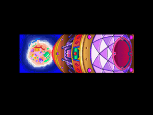
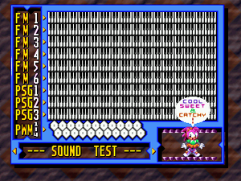

Knuckles' Chaotix
 De: La Frikipedia, la enciclopedia extremadamente seria.
De: La Frikipedia, la enciclopedia extremadamente seria.
De la serie Videojuegos:
Knuckles' Chaotix

Carátula original japonesa de la caja del Knuckles Chaotix. El diseño de la portada era muy chafa y por eso en occidente le pusieron otra.
| Desarrollado por:
|
SONIC TEAM
|
| Distribuido por:
|
SEEE-GAAA !
|
| Diseñado por:
|
Takashi Yuda, Mamoru Shigeta, Naoto Ohshima, y otros japos.
|
| Motor
|
Tao, La Fuerza, y de esas energías misticoides.
|
| Género(s)
|
Todos machos menos Charmy, de quien se sospecha que es hembra.
|
| Fecha de lanzamiento:
|
En 1995, cuando SEGA empezaba a venirse abajo.
|
| Modos de juego:
|
Estar condenado a permanecer atado a tu compañero por toda la eternidad sin poder librarte de él y escaparte.
|
| Requisitos:
|
Tener suficiente dinero como para comprar ese costosísimo periférico del Mega 32 X.
|
| Disponible en:
|
Sega 32 X y emuladores para PC.
|
| Formatos:
|
32 bits (aunque parece de 16)
|
| Edades:
|
Knuckles tiene 16, Espio y Mighty tienen 15, Charmy tiene 6, y Vector tiene como 20 (ya es adulto para andar de vago con los otros, debería buscarse un trabajo).
|
| Puntuaciones:
|
"A" de "Aburrido", "B" de "Bostezo", "C" de "Carajo!", "D" de "Difícil", "E" de "Es una estupidez tener que estar todo el tiempo atado a tu compañero!!!!", pero aunque no parezca en el fondo es un muy buen juego ¬¬.
|
- "Debut y Despedida" (la autocrítica de Knuckles)
Knuckles' Chaotix es un juego lanzado en 1995 por Sega 32X, aquél periférico carísimo que convertía al Sega Genesis en una consola de 32 BITs (o al menos eso se esperaba). Este juego es muy conocido solo por los dos o tres tipos que lo hicieron por ser el primer juego de Sega protagonizado por Knuckles The Echidna como estrella principal del juego, sin la presencia de Sonic y Tails... bueno, de hecho es el único juego protagonizado por Knuckles como estrella principal, porque parece que la Knucklesmanía no pegó así que en los posteriores juegos volvieron a meter al erizo Sonic como prota de la saga, pero al menos el equidna rojo se dio el gusto de protagonizar su propio juego sin estar a la sombra del erizo azul (y sin tener al zorrito molesto como mascota). También su importancia se debe a que éste es el único juego de la saga de Sonic para Sega 32X, así que como vemos no le fue tan bien que digamos pero conste que sí fue una innovación para la época en que salió y de hecho en sus años fue el juego de plataformas con mejores efectos visuales, ya que tenía unos gráficos de la puta madre pero por desgracia su modalidad de juego resultó ser una tremenda cagada muy difícil en comparación a los juegos anteriores, y por eso los sectores mas conservadores lo criticaron porque querían un modo de juego clásico y no este nuevo estilo mas rebuscado que le hicieron, pero conste que el juego si molaba aunque de a ratos te dieran ganas de tirar el cartucho por la ventana porque fue el Plataformas en 2D mas avanzado de la época.
Historia
Concepto, Creación y Desarrollo
En el año 1995 la Sega 32X, y que al conectarlo a la consola ésta duplicaría su capacidad para pasar de ser una consola de 16 Bits a convertirse en una de 32 Bits. Así SEGA se ahorraba el trabajo y el dinero de inversión que se requería para desarrollar una nueva consola, y abarataba costos también a sus fans que no tendrían que comprar otra maquinita porque con el nuevo periférico podrían actualizar su Sonic Crackers" y lo usaron como prototipo para crear todo el juego que sería protagonizado por Knuckles por primera (y última) vez.
Knuckles junto al cuarteto de animales fracasados que se presentaron al casting para elegir personajes para el juego. Por las poses extrañas en las que los vemos, deducimos que ya se han pegado unos tremendos "viajes" con píldoras de
éstas.
El Sonic Crackers aquel iba a ser en realidad el cancelado Sonic Stadium que vendría a ser una suerte de Sonic 4 que iban a lanzar como continuidad del Sonic & Knuckles para el Genesis, pero ahora que abandonaron los 16 BITs esos planes fueron deshechados y pudieron usar lo poco que habían programado para diseñar el juego de Knuckles. El concepto de Sonic Crackers era que Sonic y Tails iban juntos como siempre, pero ahora eran inseparables porque los dos tenían en la mano cada uno un anillo de esos Rings, y los anillos estos estaban unidos por una energía compuesta por esos polvos que salen de los anillos cuando los coges (o sea que Sonic y Tails se volvieron "inseparables" por "coger" unos "polvo"s... eso suena mal...). Así las cosas, ese mismo concepto de que el jugador controle a ambos personajes unidos por la energía de los anillos fue utilizado para Knuckles, pero como Sonic y Tails no estarían en el juego entonces tuvieron que buscar nuevos personajes para que hagan de lacayos para el equidna. Hicieron un casting donde se presentaron Mighty The Armadillo, quienes ya eran cara conocida por el personal de la empresa porque también habían acudido sin éxito al casting para elegir al prota del Espio The Chameleon y Charmy Bee, que vendrían a ser como unos "Sonic y Tails" pero de segunda selección y que obviamente nunca fueron elegidos para protagonizar el segundo juego de la saga, así que tenemos que los lacayos de Knuckles serían todos los perdedores de segunda mano que antes no habían conseguido empleo en SEGA y que ahora buscaban la segunda oportunidad para que les den un puesto. Como el estudio donde hicieron el casting era un caos total (y no me extraña, con tantos animales salvajes sueltos por ahí) entonces los diseñadores decidieron que el juego se llamaría Knuckles' Chaotix ("Los Caóticos de Knuckles"), donde por esas casualidades de la vida coincide que el nombre también lleva una obvia referencia implícita a las Esmeraldas Chaos tan características de éstos juegos, pero lo que no se expllica es por qué la palabra "Caóticos" la escribieron "Chaotix" en vez de "Chaotics" como corresponde (suponemos que los chicos de SEGA no terminaron ni primer grado por pasarse todo el día jugando videojuegos, y por eso escriben con tantas faltas de ortografía).
Al final los contrataron a todos los bichos estos porque ya sabemos que los juegos de Sonic son como un zoológico y cuantos mas animales mejor; así que Knuckles ahora tenía 4 compinches para elegir, y dos robots de mierda que son una cagada, pero eso lo veremos mas adelante...
Argumento del juego
La historia del game cuenta un argumento sobre una isla misteriosa que emerge de las profundidades del océano después de que Angel Island ascendiera a los cielos tras el final del juego anterior Sonic & Knuckles. Nuevamente tenemos que el juego se desarrolla en una isla tropical, la cual se llama Isolated Island, y así como Angel Island es una Isla Flotante que está en el cielo flotando sobre el océano, Isolated Island era una Isla Hundida que había caído bajo las profundidades del océano y ahora reflotó a la superficie nomás por puro capricho de la naturaleza (o mas bien por puro capricho de los programadores del juego). El siempre malvado Dr. Eggman descubre la isla y se encuentra con que allí hay siete anillos Rings gigantes y de distintos colores con poderes similares a los de las Chaos Emeralds, así que estos siete Chaos Rings (obviamente plagiados de los Hyper Rings del Sonic 3 & Knuckles) son robados por el Dr. Robotnik para hacer lo que siempre hace: masturbarse usarlos para sus experimentos diabólicos de dominación mundial.
Uno de los mas grandes misterios de la
ufología es por qué diantres en el Planeta Möbius hay tantos
extraterrestres de la tipología de los zoomórficos pero sólo un único
humano que nadie sabe de dónde salió. Éste es un enigma que ni siquiera
Joseph Allen Hynek pudo resolver.
Resulta que Vector, Charmy y Mighty buscaban un nuevo antro que les sirviera de fumadero de opio y como encontraron la isla deshabitada se fueron a fumar cannabis ahí, pero resulta que como Eggman había llegado primero a Isolated Island entonces ya había construído una base de operaciones tecnocratizada a la que llamó "Newtrogic High Zone", y que está camuflada como parque de diversiones para evadir impuestos, ya que obviamente las tasas anuales que debe pagar un parque de diversiones al Fisco son mucho menores de las que debería pagar una base de operaciones militarizada y teconcratizada. Cuando Vector y compañía andaban medio fumados se les dió por ir a hechar un vistazo al parque de atracciones y Eggman aprovechó para capturarlos y encerrarlos en el Combi Confiner, una máquina que mantiene confinados a los animalejos en estado de cryostasis para posteriormente usarlos como esclavos que introducirá en sus tan conocidos Badniks, o de última los obliga a travestirse para que se prostituyan en la Zona Roja del parque de atracciones y así ganar algunos dolarucos extra. En eso va de que Espio The Chameleon llega a la isla porque antiguamente los camaleones vivían ahí en lo que era una suerte de "Aldea de la Hoja" para todos los camaleones que practicaban Ninjutsu, pero como la isla se había hundido Espio tuvo que marcharse y ahora que la susodicha había salido a flote él estaba de regreso para retornar a su hogar. Sin embargo no advierte la presencia de Eggman y el gordo hijo de puta éste lo captura en uno de sus "Combi Confiner", pero entonces ocurre que a la isla llega.... cha chan, cha chan!!!: ¡¡¡sí, Knuckles The Echidna!!!, nuestro héroe encapotado espinoso arriba a Isolated Island y luego de deambular un rato por ahí llega justo a tiempo al lugar exacto donde Eggman está encerrando a Espio, así que obviamente Knuckles libera a Espio pero el Dr. Robotnik escapa con la ayuda de uno de sus lacayos mas fuertes: Metal Sonic (sí, el mismo que estaba de archienemigo en Sonic CD, pero los idiotas de SEGA en vez de poner a un Metal Knuckles para que rivalice con Knuckles nomás volvieron a introducir a Metal Sonic, lo cual no tiene sentido porque ya había sido destruído en aquel juego de Sega CD, y para colmo ¡Sonic ni siquiera está en este juego!, así que no tiene sentido que Metal Sonic sea el enemigo pero bueno... que se le va a hacer...)
Knuckles El Equidna sabe que si no detiene a Eggman va a tener que volver a enfrentarse a Metal Sonic tal como lo hizo en la final del Sonic & Knuckles donde ese androide hijo de puta le había robado la Master Emerald, así que para que eso no vuelva a ocurrir el Guardián debe recorrerse todo el jodido parque de atracciones de Eggman y liberar a Vector, Charmy y Mighty, para que junto con Espio todos ellos estropeen los diabólicos planes de Robotnik y destruyan a Metal Sonic antes de que éste se vuelva lo suficientemente poderoso como para volar hasta Angel Island y volver a robar la Master Emerald por quincuagésima vez.
Desarrollo y Sistema de juego
Personajes
- equidna Akuma es para Street Fighter. Aquí en su juego protagónico Knuckles no debe recuperar la Master Emerald porque eso ya lo había hecho en el juego anterior y repetir la trama sería muy cutre, así que aquí mas bien la tarea es preventiva y el Guardián de la Master Emerald debe destruir a Robotnik y a Metal Sonic antes de que ellos consigan las 7 Chaos Rings, que le servirían para acceder al Altar de Angel Island y robar la Master Emerald, así que en resumen viene a ser la misma mierda pero con distinto olor. Lo peculiar del caso es que siempre nos decían que Knuckles era un ermitaño que se la pasaba solo en su Angel Island sin que nadie lo joda, pero en este juego Knuckles descendió de Angel Island para ir a Isolated Island sin ningun motivo aparente, pero obviamente suponemos que fue a buscar hierba para su consumo personal porque ya se había agotado el suministro de THC de Angel Island y por eso bajó hasta Isolated Island, pero quedó tan fumado con la Mary Jane que al final ni cuenta se dio de que acabó perdido en un parque de diversiones psicodélico y extra-lisérgico y rodeado de los otros personajes a los que nunca hubiera conocido si se hubiera quedado limpio y sobrio practicando la Meditación Taoísta en su Isla Flotante como hacía antaño.
- Espio The Chameleon: Es un camaleón color índigo que de todas formas precisamente por ser un camaleón puede cambiar de colores para hacer creer que consiguió las 7 Super Emeralds del Sonic 3 & Knuckles y se transformó en Hyper Espio, aunque en realidad nada de eso ocurrió y no es tan poderoso, nomás es mas fuerte que Sonic pero no tanto como Knuckles. Como es un reptil tiene un cuerno en la punta del hocico en vez de la característica nariz de cuero que tienen Knuckles, Sonic, y demás mamíferos de la saga, pero su panza tiene un area de piel desnuda sin escamas, similar a la panza de Sonic, aunque la de Espio en vez de parecer un óvalo (0) mas bien parece un corazón, lo que ha generado ciertos rumores por parte de los fans. Además Espio corre como tratando de pincharte su cuerno en el culo y cuando salta o hace el Spin Dash no se enrrolla en bola sino que gira como un tornado, y demás diferencias inútiles que nomás hicieron para demostrar las capacidades de programación del Sega 32X; pero sin duda su única característica propia que es realmente útil es su habilidad para caminar por las paredes y los techos, ya que está entrenado en el Ninjutsu... pero en el pecho tiene una forma de corazón, así que podríamos decir que es un Ninja Gaiden.
- Kim Il-Sung). Vector es un cocodrilo alto y largo, y junto con Espio es de los primeros personajes de la saga en ser reptiles (nótese que hasta walkman (mas o menos como Otto, el chofer de Funky y 50% All Blacks de Nueva Zelanda, y lo mas peculiar es que su SpinDash lo enrrolla pero en vez de bola parece una rosquilla, obviamente porque es muy alto y largo como para enrrollarse en bola como corresponde.
- abeja, pero a pesar de eso no puede picarte con su aguijón venenoso, y joder que eso sí estaría muy cool pero desgraciadamente no tiene ni siquiera ese ataque. Lo que sucede es que las abejas solo pueden picar una sola vez, ya que si lo hacen pierden su aguijón y se les salen las entrañas hasta que mueren, así que esa es la razón por la que Charmy nunca pica a los enemigos (ya ves como al final si son realistas los videojuegos después de todo...). Otra curiosidad sobre Charmy es que es el primer mamíferos, como ya se dijo, pero al parecer en el 32X se dieron de poner reptiles y artrópodos como para ampliar la biodiversidad y mostrar que la fauna del planeta Möbius es mucho muy compleja, y no es que nomás sean todos puras ratas con púas como creíamos. En resumen Charmy es una abeja pero lo muestran como niño, aunque en realidad no existen las abejas macho sino los zánganos; pero de Charmy dicen que es una abeja y de ser abeja entonces sería hembra, como todas las abejas, así que al parecer éste tiene distrofia de género o es hermafrodita, aunque quizá solo sea algo "rarito" (como lo que se sospecha de Espio, y por eso es que ellos son tan "amigos").
- Mighty The Armadillo: El único que no es nuevo en este juego, además del prota Knuckles, obvio ¬¬. Migthy es un SegaSonic The Hedgehog, el primer arcade de Sonic donde en vez de Tails y Knuckles al erizo lo acompañaban Ray y Mighty, que básicamente eran los dobles de acción de Sonic pero disfrazados de ardilla voladora y armadillo respectivamente (pa' que no digan que eran todos erizos) y con los respectivos colores de Tails y Knuckles a los que reemplazaban. Aquí Mighty regresa para correr, hacer el spindash, y todo aquello que haría Sonic si estuviera, porque de hecho a Mighty ni fue necesario programarlo demasiado porque nomás copiaron los sprites de Sonic del Sonic 2 y le pusieron la coraza de armadillo y las orejas de puerco para que parezca Migthy. Lo que sí es único en este juego es que Migthy puede patear las paredes para rebotar en ellas, y si no se cae en el intento entonces puede saltar de pared en pared, como para diferenciarlo de Sonic y hacerlo un tanto mas equivalente a Knuckles, pero no tan hábil y poderoso como él. Por lo demás no hay mucho que decir: tiene pelaje negro pero coraza roja, lo que indica que es anarcosocialista, y sus zapatos son casi iguales a los de Sonic, pero su nariz es mas picuda como para que no digan que es una copia exacta del erizo, aunque en realidad eso es justamente lo que es.
- Heavy: Es uno de los dos robots de mierda que aparecen como personajes "secretos", que los puedes elegir como lacayos de Knuckles o de otro de los animalejos, pero no puedes elegirlos como personaje principal
porque son una cagada. Heavy es obviamente un robot Jebi que le gusta mucho el Heavy, pero a simple vista ni se le nota, porque lo único de "Heavy Metal" que tiene es que es un robot con forma de pesa, o sea que obviamente es de "metal pesado". Como indica el nombre, Heavy es tan pesado que apenas puede saltar medio centímetro y camina mas lento que una tortuga que se cagó dentro de los calzones; tampoco puede enrrollarse en bola, ni hacer el spindash, ni tiene poderes especiales, y solo sirve como grillete de presidiario para que Knuckles y sus amigos lo tengan atado a las patas y les quede como un contrapeso molesto que les impide correr y saltar librmente como corresponde (ya ves por qué digo que es un robot de mierda). Heavy es tan molesto y contraproducente que muchos sospechan que en realidad fue plantado por Robotnik para entorpecerle el paso a Knuckles y a sus amigos y hacerle la vida mas difícil (y todo apunta a que eso es cierto).
- Bomb: Es el otro de los dos robots de mierda que aparecen como personajes "secretos" que nomás sirven para hacer mas difícil la movilidad de Knuckles y los Chaotix. Bomb tiene forma de bomba (vaya... que casualidad...¬¬) y es ligeramente mas rápido que Heavy y salta algo mas alto, obviamente porque es mas enano y pesa menos, pero igual es otra cagada porque no se enrrolla en bola, ni hace el spindash, y solo explota pero cuando es golpeado por un enemigo, y la explosión es solo para joder porque en realidad no daña a los enemigos y de hecho el que es dañado es Bomb... al menos Heavy era casi invencible y mataba a los enemigos con solo tocarlos, pero Bomb es una marica que si lo tocan explota. Se dice que Heavy y Bomb
son novios trabajaban juntos en un puticlub para el Dr. Robotnik y que Heavy era el jefe de mecánicos del Doc y Bomb era su ayudante, pero escaparon de Eggman cuando descubrieron que el Doc no iba a cumplir con sus promesas de ayudar a Heavy con su problema de sobrepeso ni a solucionar la falla técnica que le causa autodestrucción a Bomb, así que por eso ellos decidieron que no tenía sentido seguir trabajando para el embustero de Eggman y por eso se cambiaron de bando y se hicieron travestis amigos de Knuckles y los Chaotix (aunque en realidad todo ese rollo es nomás el cuento que le metieron a esos babosos para infiltrarse entre ellos y cumplir con su misión de joderles la vida para que se les complique llegar hasta la final para derrotar a Eggman).
- Dr. Ivo "Eggman" Robotnik: El ya conocido archienemigo de todos los juegos de esta saga. Aquí el Dr. Eggman regresa a pesar de que Sonic no está, obviamente porque quiere vengarse de Knuckles por aquella ocasión en la que anteriormente en Hidden Palace el Guardián Knuckles traicionó a Eggman y se fue del lado de Sonic, que en realidad fue todo culpa de Eggman por haber electrocutado a Knuckles y haberle robado la Master Emerald, pero bueno, ya sabes como es este Nazi de Eggman que siempre le hecha la culpa de todos los males a los comunistas como Knuckles, aunque en realidad fue culpa del Doc y no del equidna. Resulta que en esta ocasión Robotnik llega a Isolated Island y encuentra una Chaos Ring, y sin pensarlo ya antes de encontrar las Chaos Rings restantes el Dr. Huevón se pone a hacer réplicas artificiales de esas argollas para crear rings oscuras que introduce en sus badniks, en reemplazo de los animales que parece que en esta isla no hay ninguno porque Eggman ya esclavizó a toda la fauna del planeta Mobius durante los cuatro juegos anteriores y por eso ahora tuvo que buscarse otra fuente de energía para sus robots esclavos. Así las cosas, Eggman decide instalarse en la isla y crea el parque de diversiones para atraer animales estúpidos a los cuales encerrar para luego usarlos de esclavos, y si todo sale bien logrará tener suficientes badniks como para hacer un buen rastrillaje de la zona y encontrar todas las Chaos Rings y así abrir el portal teletrasnportador que lo llevará a Angel Island a robarle la Master Emerald a Knuckles, y de última si todo sale mal siempre puede contar con Metal Sonic para que vaya de matón y ponga como camote a Knuckles y a los Chaotix.
- Metal Sonic: La copia
barata mecánica de Sonic está de vuelta. El androide con forma de erizo azul que debutó sexualmente en Sonic CD ahora regresa para volver a hacer las veces de arma de destrucción masiva escogida por el Dr. Eggman para matar a todos los animales que se entrometan en sus planes de dominación mundial (algo así como si fuera "la Solución Final", o cuando menos un Blitzkrieg). A pesar de que Sonic lo había destruído en aquel juego de Sega CD parece que ahora Eggman lo reconstruyó, lo cual no sorprende ya que de todas formas lo habíamos visto en su versión "Beta" como el Mecha Sonic en el final del Sonic 2, y nuevamente reconstruído en su versión 2.0 en Sonic & Knuckles, donde el susodicho equidna rojo lo destrozó en mil pedazos, así que aquí vemos como Metal Sonic regresa nuevamente en su forma clásica porque es otro que también quiere vengarse de Knuckles y darle ostias al equidna ése para romperle el culo a patadas y dejárselo mas rojo que de costumbre, que total si no logra su cometido Metal Sonic no se hace problema porque sabe que el Dr. Robotnik lo puede volver a reconstruir cientoochentamil veces mas, y a SEGA siempre le sale mas barato reinsertar a Metal Sonic que introducir a Metal Knuckles, que hubiera sido el rival mas apropiado para éste juego, pero al igual que a Fang, a Metal Knuckles nadie lo quiere y por eso los dejaron afuera a esos dos a pesar de que ellos deberían haber sido los enemigos de Knuckles en su juego, pero en su lugar pusieron al tan trillado y estereotipado Metal Sonic que ya no tiene chiste volver a verlo U_U.
Ítems, Barreras, y demás porquerías
En este juego algunos de los ítems fueron modificados y se agregaron otros nuevos, obviamente como para que no digan que nomás hicieron copy-paste con los objetos del Sonic & Knuckles, así que por eso hay modificaciones y objetos distintos con el único proposito de demostrar lo que se puede hacer con los 32 bits del Sega 32X. He aquí la lista de objetos de este juego:

- Ring: Los clásicos anillos no podían faltar. Obviamente y al igual que siempre sirven para que no llegues a la penosa situación de vudú que te mantiene atado a tu compañero por toda la eternidad, y a veces sucede que si tu partener y tú están en lugares diferentes de la escena entonces el malnacido se queda trabado tras los muros y no te deja seguir corriendo, y para solucionar ésto debes presionar el botón A para que tu Combi Character salte por el plano tridimensional del hipotético "Eje Z" y así se pondrá nuevamente junto a tí para que ambos puedan seguir
cogiendo corriendo, pero como todo el Parque de Atracciones y sus respectivos escenarios están controlados por Eggman entonces aquí nada es gratis y el sistema de débito automático te quita 10 anillos cada vez que haces esto de presionar el botón A para recuperar a tu compañero, y por eso aún con 0 anillos te siguen descontando rings y terminas debiéndolo un trocho de money al fisco y el FMI te persigue para insistir con su paquetazo neoliberal de pago que te desangra los bolsillos (¡puto capitalismo!). Obviamente para recuperar la estabilidad financiera debes seguir cogiendo a tu hermana anillos para disminuir los numeros negativos y volver a los positivos, pero ten cuidado que si estás en 0 anillos o menos entonces cuando te golpee un badnik tu compañero morirá y quedarás solo, y si estás solo y sin anillos pues te mueres como ocurría en los otros juegos de antaño. De todas maneras tu compañero resucita a los 10 segundos de que muere, porque nunca quedarás libre de la maldición que te condena a estar atado de por vida a ese pinche pendejo molesto así que él siempre vuelve con tal de que tu sigas sin poder moverte libremente como corresponde. Cabe destacar que siempre que le pegan solo a tu compañero el nomás pierde un solo anillo, pero si te pegan a tí los pierdes todos y tienes que apresurarte para andar cogiéndolos de a uno y obviamente con tu compañero atado a las patas resulta un estorbo a la hora de saltar alto y rápido como deberías.
- Item Box: Las clásicas cajetas de ítems son otro de los objetos que no podían faltar, y aquí además tenemos objetos nuevos así que vamos a verlos:
- 10 Anillos: La misma mierda de siempre, tiene el dibujo de un anillo en la pantalla del monitor y si lo pinchas te da 10 anillos, no hay nada nuevo en esto ¬¬.
- Anillo Azul: Éste si es nuevo, es igual al anterior pero el anillo de la pantalla del monitor es azul en vez de amarillo. Al coger ésta argolla no obtienes mas anillos, pero te fusiona a todos los anillos que tienes en uno solo, así que cuando un badnik te golpea primero pierdes un super ring brillante que posee a todos los anillos que tenías en vez de perder a todos los anillos desparramados como antes, así que si eres hábil puedes recuperarlos en un santiamén, pero si tardas mas de dos segundos en cogerlo entonces el super anillo brillante y chispeante se desarma y se vuelve a desparramar en todos los anillos individuales como siempre, y los pierdes a todos como de costumbre. El anillo azul de combinación y fusión de rings solo vale por una vez, así que si ya te pegan y pierdes el super ring chispeante entonces pa la próxima tendrás que volver a coger otro monitor de anillo azul porque si no lo coges
seguirás siendo virgen entonces no tendrás a los anillos fusionados y cuando te peguen los matones perderás la lluvia de anillos que se desparraman como siempre y no los podrás recuperar porque el hijo de puta que tienes atado a tí no te deja moverte lo suficientemente rápido y ágilmente como para volver a agarrarlos a todos.
- Barrera: El clásico escudo azul de los primeros juegos de la saga. Como vez aquí nos cagaron y no nos dan los tres escudos elementales de Agua, Fuego y Electricidad que había en Sonic & Knuckles, y en cambio nos cagaron y nos volvieron a poner el escudo azul de Sonic 1 que no sirve para una mierda porque no tiene ningún poder especial. Obviamente fue rediseñado para la ocasión y esta vez en vez de un campo de energía giratoria o un pulso de ondas latentes ahora tiene forma de una suerte de medallón giratorio en pseudo 3D, que mas bien parece un condón de látex, pero es azul porque si lo hacían de color amarillo caucho iba a parecer un condón y no querían que se notara tanto, pero claro que bien podrían haberlo hecho rojo para que sea del color de Knuckles, ya que al cabo éste es su juego!!!, pero los idiotas de SEGA están tan fanatizados con Sonic que volvieron a hacer el escudo azul a pesar de que el erizo no sale en este juego. Por lo demás no hay mucho que decir, solo te protege de un golpe y ya, así que no tiene mas poderes que esos, y por lo tanto es una cagada.
- Velocidad Sonica: La ya conocida caja de zapatos como los de Sonic, que hace que corras mas rápido por tiempo limitado. Debería tener la figura del zapato de Knuckles en vez del de Sonic, ya que al cabo éste es el juego del equidna, pero si la idea era que corras mas rápido entonces es obvio que pusieran el zapato de Sonic, ya que como sabemos el erizo en realidad no tiene el poder de correr a supervelocidad sino que eso solo lo puede hacer gracias a que sus zapatos tienen un dispositivo de alta tecnología que le permiten correr así de rápido, pero sin ellos es un lenteja. Entonces por eso aquí pusieron estos zapatos para aumentar la velocidad de los personajes, y parece que en la caja hay dos pares de zapatos porque no solo Knuckles (o el personaje de turno que estés usando) corre mas rápido, sino también el compañero molesto que tienes atado tras de tí (que si hubieran puesto el zapato de Knuckles entonces los personajes darían patadas de Kung Fu, pero la idea no era esa, sino lo de la velocidad sónica).
- Muteki: Que el nombre japonés no te confunda; es simplemente el ya conocido monitor del escudo de estrellas que te da invencibilidad, nomás que los otakus que escribieron el artículo quisieron ponerle el nombre original en el idioma nippon. No hay mucho que explicar, es la clásica barrera de estrellas circundantes que te rodean como un campo de fuerza que te hace temporalmente invulnerable, lo único nuevo es que ahora ambos personajes son rodeados por este escudo de estrellas y no solo el personaje del Player 1, así que ambos son invencibles por escasos segundos hasta que se acaba la musiquita cursi como siempre sucedía en estos juegos.
- Flecha Arriba: Otro de los nuevos monitores de ítems que introdujeron exclusivamente en este juego. En la pantalla tiene una flecha que apunta hacia arriba, lo que indica que si usas este objeto obtienes una fórmula de esteroides anabólicos mezclados con viagra que te agrandan todo... o sea, no solo te la agrandan ahí abajo sino que todo tu cuerpo se agranda y crece hasta convertirse en un gigante pixelado, muy recomendado para que Charmy Bee crezca al menos hasta el tamaño habitual de los demás personajes, pero desgraciadamente la formula pierde su efecto al poco tiempo y vuelves a encogerte para vovler a ser el alfenique escuálido y enano que eras antes.
- Flecha Abajo: Otro monitor de ítems exclusivo y único de este videogame, que como te imaginarás hace exactamente lo contrario al monitor anterior, para devolverle el balance a La Fuerza. Si coges el monitor con la flecha que apunta hacia abajo, obtienes una pastilla de chiquitolina que te encoge hasta el tamaño de Charmy Bee, para que el mocoso ese no sufra de complejo de inferioridad por ser mas enano que los demás, pero ya te imaginas que si él toma esta chiquitolina entonces queda mas o menos del tamaño de un pitufo y por eso sigue traumado con su complejo de inferioridad que parece no tener fin. De todas formas el efecto se va tan rápido como el de los anabólicos anteriormente mencionados, así que todos vuelven a la normalidad para seguir siendo del mismo tamaño que siempre, y Charmy de todas formas seguirá siendo el enano del grupo por el resto de su vida.
- Combi Change: Éste monitor muestra alternantivamente las caras de los personajes que no están siendo usados por el momento, así que si lo tocas cambiarás de compañero temporalmente por el que sea que haya quedado en el monitor en el momento exacto en que lo tocaste, pero solo cambias de Combi Character por unos segundos y luego el que tenías regresa contigo y el que lo reemplazó supongo que se va a la mierda, que se yo.
- Role Play: No es uno de esos Role Playing Games ni tampoco se refiere al "cambio de roles" con esa connotación sexual que tanto te gusta; es un monitor que tiene dos flechas haciendo el 69 y que viene a ser la versión 2.0 de aquél monitor que había en el modo 2 Player Versus del Sonic 2, con flechas que cambiaban el lugar en que estaban Sonic y Tails. Aquí lo que hace ésto es que temporalmente intercambiarás el lugar con tu compañero, así que ahora tu usarás al personaje que elegiste de segundón porque él estará como personaje principal, y el jugador 2 (o en su defecto el CPU, si es que eres un nerd solitario sin amigos) usará al personaje que tenías antes en primer lugar, pero esto dura solo algunos segundos y luego ambos regresan a sus puestos. Lo cutre de éste ítem es que a las flechas de intercambio las hicieron exactamente del mismo color que en el modo versus del Sonic 2, o sea una flecha azul como Sonic y otra amarrón claro como Tails, cuando en este juego Sonic y Tails no están así que las flechas deberían ser una roja como Knuckles y una verde como Vector, pero para no tener problemas de marquesina entre los personajes que se pelean como putas por salir en la foto entonces lo dejaron como estaba, pero en cualquier caso no se trata de un juego de rol tipo Yu Gi Oh! ni nada por el estilo como pensaste que era, y solo es un intercambio de lugar para darle algo de frikismo al asunto.
- Resorte: El tan característico resorte que te catapulta por los aires y te manda a la mierda. Obviamente están de vuelta los resortes amarillos y los rojos; los amarillos ya sabes que son los mas débiles y los rojos son los mas fuertes y que te mandan mas alto (porque siempre los marxistas son mas fuertes que el oro amarillo de los capitalistas, aunque no les vaya tan bien que digamos pero siguen resistiendo y con sangre roja en las venas!!!). Además para innovar agregaron unos muelles color azul que son todavía mas potentes, obviamente porque los programadores del juego extrañaban mucho a Sonic y por eso siempre siguen insistiendo con meterle el color azul a todo lo que puedan, principalmente a las cosas que aparentan tener potencia, velocidad, y demás características que SEGA siempre asocia al erizo azul (porque es el único personaje de la compañía que tuvo éxito).
- Cama de Púas: La tan trillada y estereotipada cama de clavos no podía faltar y está de regreso, así que si a esta altura aún no sabes que si la tocas te pincha el culo y te hace perder los anillos, entonces mejor vuelve a primer grado de la escuela primaria y ponte a jugar algún juego de nenas y maricas como los de éste.
- Cartel Giratorio: Al clásico poste giratorio con los paneles con cara
de culo Eggman los cambiaron por otros que son horribles diferentes. Ahora al final de los 4 primeros niveles de cada escenario hay un poste giratorio pero en vez de un cartel con la cara de los personajes lo que hay ahora es una placa de forma rectangular en circo para seguir hartando con la temática carnavalesca del juego, y en las caras laterales del rectángulo vemos que cuando gira el poliedro sus caras mas cortas tienen la silueta del Dr. Eggman, que viene a ser el payaso It de esta Feria, Parque de Atracciones, o lo que meirda sea esta cagada de base que tiene en este juego. Por lo demás es lo de siempre, debes pasar através del cartel giratorio para que dé por concluído el nivel que jugaste (¿o creías que aquello de "Clear" era nomás publicidad del shampoo contra la caspa?).
- Special Ring: Los Super Anillos gigantes que te permitían ir al Special Stage en Sonic & Knuckles están de vuelta. Ahora también se vuelve a reciclar aquello del prima 50 anillos durante el juego y llegar con ellos hasta el final del nivel donde el susodicho estará flotando en el aire sobre el cartel giratorio de final de conclusión de fase, porque la cosa es que sí hay también de estos anillos gigantes en unas cavernas secretas escondidas dentro del nivel en el transcurso del juego tal como en "Sonic & Knuckles", pero esos anillos escondidos en el nivel solo te mandan
a la concha de la lora a un Bonus Stage y no al Special Stage, y además estos anillos de Bonus aparecen solo si tienes 20 o mas Rings, en cambio el del final del nivel encima del panel giratorio aparece con 50 Rings así que si tienes solo 20 no podrás ir al Special Stage a buscar la Chaos Ring. De todas maneras te conviene llegar al final del nivel con bastante mas que solo 50 anillos, preferentemente con 70 u 80, porque los Special Stages se hacen cada vez mas difíciles y mas largos y son por tiempo limitado a contra reloj, donde se consume un anillo por segundo y si te quedas sin rings antes de obtener la Chaos Ring entonces te querrás cortar las bolas, y conste que eso duele mucho (te lo digo por experiencia).
Estructura del juego
En el inicio tenemos que comenzamos en Isolated Island, obviamente jugando con Knuckles, porque al cabo que este es su juego, y aquí tendremos la única oportunidad de manejar al equidna libremente sin que nadie lo joda, porque ni bien das dos pasos llegas a donde Eggman está encapsulando a Espio así que instantáneamente Knux le rompe las pelotas la cápsula y libera al camaleón, que sospechosamente también tenía en mano un anillo Ring tal como el que tiene Knuckles, y desde entonces quedan entrelazados por la energía mística de los anillos, unidos para toda la vida como si fueran los hermanos siameses Eng & Chang. En eso aparece Metal Sonic que se lleva a Eggman para sacarlo del peligro, y automáticamente Knuckles & Espio pasan a una nueva fase, que en realidad es una fase de práctica que sirve de tutorial. Esta fase es toda cuadriculeada como el clásico Green Hill Zone, pero es de colores púrpura y amarillo en vez de amarrón y anaranja, y no hay paisaje de fondo, todo es paredes y muros cuadriculeados. En esta fase contamos con un DEMO de cada uno de los movimientos que habrá que ejecutar, porque ahora que Knuckles y Espio están atados de por vida deberán moverse juntos, así que en este aburrido tutorial el CPU mostrará los movimientos que pueden hacerse con ambos personajes aprovechando las propiedades elásticas de la energía que une a los anillos, y mostrando cuales secuencias de botones deben usarse, y si no te saltas los pasos entonces deberás repetir cada movimiento del tutorial hasta finalizarlo, que por supuesto si quieres te lo salteas todo pero conste que después en el juego te va a costar un carajo moverte bien si no te aprendes las maniobras, así que mejor apréndelo y no te duermas en el intento. La "introducción" alcanza su última etapa cuando tras salir del tutorial Knuckles y Espio regresan a Isolated Island, ahora en un nivel completo de 4 actos a diferentes horas del día, con los ítems y obstáculos para que ésta zona te sirva de entrenamiento y pongas en práctica lo aprendido en el tutorial (que si te lo pasaste por alto te jodiste) y ya que acabas los 4 actos seguidos de Isolated Island (sí, son 4 al Hilo, como Knuckles acostumbra a hacer) entonces recién ahí empezará el juego de verdad (¿entonces todavía ni empieza?¿y todo esto que se supone que fue?).
Espio maravillándose al observar los psicotrópicos y lisérgicos colorinches ultra-recargados que abundan en este juego, y que terminan causándote ataques de
epilepsia.
Para comenzar los niveles propiamente dichos de este juego, Knuckles y Espio aparecerán en la puerta del parque Newtrogic High Zone, en lo que según el código de Stage Select sería el "World Entrance", que por si no sabes ni papas de La Guerra de los Mundos" o algo así ¬¬). En esta entrada tienes dos direcciones para ir, una de "Exit" y otra de "Play", y en el 90% de los casos suele que te diriges a la de Exit porque te quieres ir a la mierda de lo hinchado las pelotas que estás, pero si de puta casualidad vas a donde dice Play entonces verás el letrero de "Attraction Information" con los 5 Escenarios del juego y a cual Nivel de cada uno podrás jugarle a continuación.
Para hacer mas rebuscado el juego y aparentar que el 32X si tenía mas memoria que el Megadrive tradicional entonces hicieron que los niveles también tengan un sistema mas novedoso y complejo: ahora en vez de pasar linealmente por cada zona de dos actos a la siguiente la cosa en cambio es mas variable y hay 5 fases distintas pero con 5 niveles cada una, que ahora son en distintos momentos del día como para aparentar que va transcurriendo el tiempo mientras juegas. Lo peor mas raro es que no juegas las fases en orden y tampoco sus niveles, sino que siempre caes en una suerte de "mapa" que es esa base/parque de "Newtrogic High Zone" donde desde ahí te toca por azar uno u otro escenario y entonces también por azar vas a cada uno de sus respectivos niveles por separado... o sea que despues de jugar por ejemplo en "Botanic Base Level 1" puede que luego te toque "Marina Madness Level 1" en vez de que vayas a "Botanic Base Level 2", y puede que tambien de puta casualidad vayas cuatro o cinco veces al mismo escenario pero entonces los otros quedarán incompletos porque solo fuiste una vez a uno, dos veces a otro, y así... en fin, la liaron de lo lindo con los escenarios pero la cosa va de que debes completar los 5 niveles de cada fase, aunque no tendrás ni puta idea de cuando vas a poder jugar en cada uno.
Así de mareado quedó Knux por lo liado del jodido modo de fases de éste juego.
Ahora bien, sobre como elegir a los personajes, pues siempre que llegas a "World Entrance" debes ir hacia adelante y entrar a una sala donde verás un Combi Catcher, que es un aparato donde Knuckles elige cual personaje recoge, algo así como esos juegos de mierda donde metes la moneda y mueves la palanca para que unas pinzas atrapen al muñeco de felpa que tu quieres; y al igual que en esos juegos aquí también nomás tienes escasos 10 segundos para atrapar al bicho y siempre te caga y te termina capturando a uno que no querías, pero bueno, después de todo se supone que esta base de Eggman es una Feria y ya sabes que en un Carnaval de estos siempre te estafan y por eso los dueños de los Parques de Atracciones son tan ricos pero los niñatos que van a jugar al parque son pobres y nunca consiguen el muñeco de felpa que quieren.
Luego de elegir el personaje que te acompañará (o mas bien conformarte con el que te toque) sigues camino adelante y te lanzas a una máquina donde debes golpearla para que se detenga y caiga justo sobre la imagen de la zona en que quieres jugar, que obviamente nunca caerá la selección sobre la zona que querías y tendrás que jugar a otra, y así sucesivamente cada que pases uno de esos niveles volverás al World Entrance de Newtrogic High Zone, volverás a usar el Combi Catcher para atrapar a Espio, Vector, Charmy, o cualquiera de los otros, y volverás a intentar seleccionar una de las "Atracciones" que son las fases del juego y a los cuales deberás completar los 5 niveles de cada fase de la manera aleatoria y desordenada como vengan, al punto tal de que te mareas y te cansas de lo denso y repetitivo del juego y terminas sacando el cartucho y arrojándolo por la ventana antes de llegar al final y saber como termina la historia.
Escenarios, Atracciones, Niveles, o como mierda se diga
Como habrás visto también la cagaron liaron bastante con el tema de como nombrar a los niveles; en los otros juegos cada fase es una "Zona" y se divide en dos "Actos", pero en éste juego cutre todo el parque de Newtrogic High Zone ya se llama "Zona" y por eso a las cinco fases las llaman "Escenarios", aunque en el letrero luminoso de la entrada de Newtrogic High Zone dice que esos escenarios son "Atracciones", obviamente porque Eggman encerró todas las escenografías de la isla dentro de los muros del parque Newtrogic High, convirtiendo los escenarios en sus "atracciones" para atraer a todos los animalejos estúpidos que quedaron encerrados por curiosos (ya lo dice el proverbio chino: "La curiosidad mató al gato"). Para cagarla liarla mas tenemos que no solo le dicen Escenarios/Atracciones a lo que originalmente serían las "Zonas", sino que además a lo que serían sus respectivos "Actos" aquí les dicen "Niveles", así que cuando antes tu decías "mira men!, llegué hasta el cuarto nivel del Sonic 3!" todos entendían que se trataba de Carnival Night Zone, pero ahora si dices "¡llegué hasta el cuarto nivel del Knuckles Chaotix!" todos creerán que estás por ejemplo en Speed Slider Level 4, o quizá Techno Tower Level 4, pero en cualquier caso no habrás ni completado una sola fase entera al 100%, y para colmo todavía te estarán faltando las otras 4 fases restantes, así que todos creerán que eres un perdedor. Para colmo de males son cinco los "niveles" de estos "escenarios", que serían cinco "actos" por cada "zona", y bueno, en fin, ya ves cómo la habrán de complicado bastante con la estructura del juego que por eso hasta se hace difícil explicar hasta cual fase llegaste y por donde andas en el juego. Obvimente esto lo hicieron los chicos del Sonic Team a propósito para crear confusión y que no sepas cuanto te falta para llegar hasta la final, y así con eso te obligan a seguir jugando a su querido juego por toda la eternidad hasta marearte y que mueras de epilepsia por los efectos especiales del colorido game combinados con su laberíntico y confuso laberinto de niveles que te atrapan como una telaraña y te enrriedan hasta hacerte caer en un torbellino psicodélico del cual nunca escaparás....
O_O Bueno, en fin... mejor por el momento dejemos los efectos psicotrópicos del LSD a un lado y pasemos a ver cuales son estas tan intricadas y complicadas fases (o como carajo se llamen ¬¬):
Fases de Acción
Knuckles & Espio en Isolated Island. Nótese que la cabeza de Knuckles se ve algo aplanada, probablemente porque el robot Heavy se le cayó en la cabeza y le dejó el cráneo aplastado!.
- Isolated Island: La Isla Aislada es la ínsula donde transcurre este juego, y se trata de una isla que está aislada del resto del mundo (¬¬ vaya, no lo había notado... ¬¬). No se sabe bien de donde carajo salió esta isla porque siempre hay enormes discrepancias entre las versiones japonesas y americanas.
Según dicen algunos, la isla emergió del fondo del ojete océano cuando una emisión de rayos cósmicos de alta energía fue emitida por la Master Emerald desde el Pilar Central de su Altar hasta las profundidades de la Zona Abisal del lecho marino. Así emergió una gran masa de tierra que en realidad era una roca apestosa tipo Iwo Jima sin suelo fértil, ni vegetación ni nada, pero gracias al poder de la Master Emerald ésta isla rocosa se llenó de vida y florecieron plantas, florecillas, y demás mariconadas que la convirtieron en la hermosa isla tropical que es hoy. Como Knuckles detectó el remanente de Energía que emitía la isla entonces fue a investigar al lugar con ansias de encontrar una novia restos arqueológicos que comprueben que esa isla antiguamente había sido parte de la Civilización Echidna, su ancestral pueblo ahora casi extinto. Por desgracia Eggman ya había detectado también la energía del Chaos gracias a sus sofisticados dispositivos tecnológicos de detección de energía (que en realidad nomás eran dos varillas de radiestesia, pero no le digas a nadie...) así que el Doc Emmett Brown Ivo Robotnik arribó a la isla antes que el equidna y descubrió unas inscripciones antiguas que confirmaban que la ínsula fue parte de la ancestral civilización de los antiguos Mayas Echidnas, y que en este lugar había 7 anillos gigantes y poderosos que se formaron con la energía cristalizada de la Master Emerald para adoptar poderes similares a los de las 7 Chaos Emeralds, y por tanto puede decirse que estos 7 anillos son un plagio de las Esmeraldas Caos Anillos del Caos, o Chaos Rings. Eggman encuentra uno de los anillos, lo combina con sus habilidades mecánicas para crear la fortaleza Newtrogic High Zone, y hace réplicas del Chaos Ring para fabricar pequeños Dark Ring que sirven de combustible para sus BADNIKs y todo el resto es historia y ya lo conoces porque estos juegos son todos iguales...
Por otro lado, otras versiones dicen que en realidad la isla ya estaba ahí en el medio del mar del sur y que no era de los equidnas sino de los camaleones, y por eso Espio The Chameleon ya vivía allí y llevó a sus amigotes Charmy Bee y Vector The Crocodile para los ensayos de la banda de Ray The Flying Squirrel. En eso mientras ensayaban fue que la Master Emerald produjo la emisión de Energía que reactivó las Chaos Rings (dormidas durante miles de años) y por eso Eggman llega a la isla, los esclaviza a todos, Knuckles lo interrumpe justo con las manos en la masa cuando capturaba a Espio, y los salva a todos y se ponen a pelear contra Eggman para destruír su fortaleza de Newtrogic High Zone e impedir que el Huevón consiga las 7 Chaos Rings para que no pueda invocar a la Master Emerald, y todo eso que es tan predecible en los juegos de esta saga.

Que guay se ve la
Feria de
Eggman en
3D!!! ... U_U pero por desgracia el puto juego es en 2D ¬_¬
- Newtrogic High Zone: La Alta Zona Nuevatrógica es la base de operaciones ultramilitarizada y tecnocratizada que el Dr. Robotnik construyó en Isolated Island para saquear los recursos de la isla y mantener presencia militar en toda la zona que él quiere mantener bajo su control. Básicamente es lo mismo que hacen los mercado a la isla ocupada y así implantar el sistema capitalista que le deja ingresos, utilidades y ganancias con el cual sume a los habitantes de la isla en la alienación y así mientras los consumidores que dejan su dinero en los juegos de la feria se distraen con la carnavalesca banalidad enajenadora de las luces coloridas y diversiones inútiles, Eggman aprovecha la feliz ignorancia de esas masas alienadas y ya que ellos están muy distraídos con sus diversiones, él invierte el dinero recaudado en financiar su arsenal militar de vehículos ovoides con armas de destrucción masiva y un ejército de robots esclavos que manda como tropas de asalto a sitiar toda la isla. Así Eggman deja a todos los paisajes de la isla encerrados dentro de las murallas de su fortaleza, convirtiendo a los ecosistemas naturales en meras "atracciones" para lucrar con la enajenación del proletariado y hacer dinero privatizando los recursos naturales, a los cuales incluso ya empezó a devastar, por ejemplo erigiendo Torres Tecnológicas en una de las áreas y convirtiendo a un jardín Botánico en una Base de operaciones, volviendo los ecosistemas naturales en meros "escenarios" para su espectáculo carnavalesco del "parque de atracciones" que con sus murallas militarizadas mantiene de rehén a toda la isla, tal como las murallas de Jerusalém mantienen de rehén a toda Palestina.
- Botanic Base: La Base Botánica es un gran jardín botánico que antaño funcionaba como Granja Cooperativa creada y utilizada por los antiguos equidnas para administrar su agricultura con un sistema colectivista, socialista y comunista, pero que ahora el Dr. Eggman la convirtió en una base de operaciones comerciales donde cultiva ayahuasca, peyote, floripondios, y casi cualquier hierbajo que provoque efectos alucinógenos similares a los del LSD. Además hay plantas por todos lados, hasta flotando en el aire (ya ves lo que decíamos de las hierbas alucinógenas...) y algunas las puedes pisar para que te sirvan de escalones para subir a lugares mas altos, pero cuidado que hay badniks camuflados como plantas y si te pinchas el culo con éstos te va a doler y del pinchazo despertarás del sueño alucinógeno y volverás a la cruda realidad, que era ese parque de atracciones de mierda donde siempre apareces en la entrada y pasará que te querrás ir de una buena vez. Si tomas coraje y no te vas, y decides seguir probando suerte en esta fase con escenografía de invernadero, entonces en algún momento llegarás al Nivel 5 de la susodicha Base Botánica y allí al final del recorrido deberás enfrentar al Dr. Eggman en los clásicos combates contra el Jefe de la fase donde Robotnik siempre viene con su Egg-O-Matic 2000 equipado con algun arma de destrucción masiva. En este caso el artilugio escogido por Eggman es una máquina roja que atrapa a tu compañero (pero desgraciadamente no te lo saca de encima, solo te mantiene tirante y te impide moverte bien) y tú debes golpearlo en el fuselaje de su huevomóvil, como siempre, nomás que como Eggman es un facho amante de la Policía instaló una suerte de picana eléctrica tipo Taser que te electrocuta cuando quires golpearlo, obviamente para recordar aquellos viejos tiempos cuando el Dr. Eggman electrocutó a Knuckles en Hidden Palace Zone (es que Eggman es un nostálgico, y para él vale aquello de "todo tiempo pasado fue mejor", aunque eso implique ser un ultraconservador que gusta de torturar a los disidentes evolucionistas con electricidad). Cuando derrotas a Eggman verás que cuando su Eggmobile se hace mierda sale de adentro un Dark Ring bastante mas grande que los que tienen los badniks, porque obviamente un aparato de éstos necesita una fuente de poder mucho mayor, y la Dark Ring se autodestruirá sola y no podrás agarrarla por mas que lo intentes, así que ya anda sabiendo para la próxima que eso es lo que siempre ocurre tras destruir la máquina de Eggman, así que no seas uno de los tantos gilipollas que intentan coger el Anillo Oscuro, porque no se puede (te lo digo por experiencia).
 Al final resultó que la "Resbaladilla Veloz" era en realidad un cohete espacial con un carrousel en la punta, tal como lo vemos aquí mientras despega de la Base de
Cabo Cañaveral Newtrogic High Zone... ¡momento!, ¿un cohete espacial con un carrousel adentro? ¿pero qué carajo se fumaron los
lammers yonkis del Sonic Team? ¡¡¡!!!.
- Speed Slider: La Resbaladilla de Velocidad es una irracional zona donde hay lo mismo de siempre: caminos intrincados y laberínticos llenos de cachivaches y artilugios sin ningún sentido aparente, pero lo particular de este escenario es, como indica su nombre, que casi todos los caminos conducen a
Roma resbaladillas y deslizaderos donde te caes de manera empinada y oblicua, o en caso contrario son pendientes igual de empinadas por las que debes subir para ir arriba (ni modo que subas para ir abajo ¬¬). Lo que sí no es tan exacto es eso de "velocidad", porque si bien las resbaladillas obviamente te harían ir mas rápido, lo que siempre te caga es que estás atado a tu compañero y resulta una molestia porque te frena y no te deja aprovechar la velocidad de estas resbaladillas superdivertidas; así que lo de "Slider" es cierto pero lo de "Speed" te lo caga siempre el hijo de puta que tienes amarrado ahí detrás tuyo (y peor aún cuando ese hijo de puta es el robot Heavy, porque ahí si que te caga toda la poca velocidad que podrías llegar a tener). Por lo demás la fase es como te imaginas; torretas de colores por todas partes, escenografía carnavalesca con gráficos excesivamnte recargados que dejan poco contraste entre el fondo y el mapeado... aunque claro que eso es característico de todas las fases de éste juego así que no le vamos a hechar la culpa a solo a ésta. Los badniks en este escenario son esos que parecen mosquitos, otros que te tiran sus bolas para atacarte, unos que tienen dos turbinas, y otros que parecen un marciano chupatierra como esas aspiradoras de la década del 90, pero que flotan en el aire como OVNIs y te joden bastante. La máquina de Eggman en el Nivel 5 de este escenario es un Carrousel con unas plataformas de esas con pinchos en la parte inferior, para aplastarte y clavarte contra el suelo, que recuerdan al Boss de Wing Fortress Zone del Sonic 2 (por lo visto siguen usando el viejo truco de reciclar aparatos viejos y ya usados de antemano en juegos anteriores). Si sobrevives, pues lo mismo de siempre: le pegas 8 veces a Eggman, su máquina se destruye, el hijo de puta escapa, y la Dark Ring se desprende de la máquina y se autodestruye mientras los dos idiotas de tú y tu compañero tratan de atraparla a pesar de que antes ya dije que es imposible agarrar estos anillos oscuros (sí, eso!... ya le vas agarrando la mano!... un tantito mas y ya lo vas entendiendo!).
- Amazing Arena: La Arena Asombrosa es otra fase con la pantalla aún mas recargada en el colorido al punto de que se pierde casi todo el contraste entre el mapeado y el fondo, y la sobrecarga de colores brillantes puede causarte ataques de epilepsia y ceguera permanente. Si por el nombre de este escenario creíste que se trataba de una especie de Sandopolis Zone con arena por todos lados, pos lamentamos desilusionarte pero no: no hay ni medio grano de arena en esta zona, porque parece que el paisaje arenero natural ya fue devastado por el Dr. Eggman y sobre el lugar construyó esta mierda de superestructura que es toda artificial y de metales de colores, algo así como para seguir con la temática del "Parque de Atracciones", que es lo que abunda en todo el puto juego y por eso practicamente todos los niveles de este videogame son así. Para colmo este escenario es el mas difícil de todos; ni bien empiezas la pantalla está en colores pastel y/o tono sepia, para darle un aire mas
gay tristón acompañando con una música de mierda también triste que nos acaba por dar un aire a la época de la Gran Depresión durante la crisis de la década del '30. Para devolverle el color lisérgico y la música ácida a la fase hay que encontrar un reloj gigante que se enciende al presionar un botón, y ahí regresa todo a la "normalidad" (si es que a semejante escenografía cursi se la puede considerar "normal"), y esto es indispensable porque si te pasas todo el nivel sin haber tocado los cojones el botón para que vuelva la luz entonces la memo del cartucho no tomará por superado el nivel y no te grabará que lo pasaste, y tendrás que jugarlo otra vez, y obviamente no quieres eso (que con solo una vez ya es demasiado!). Además como si eso no fuera Charlie y la fábrica de chocolate" para teletransportar los chocolates a la TV y que luego pudieras sacarlos de la pantalla para tenerlos realmente contigo y comértelos, así que ésta es otra prueba de que Willy Wonka es un hombre malvado que hace negocios con el Dr. Eggman para explotar a los Oompa Loompa que tiene de esclavos, tal como todos los burgueses hacen y por eso Eggman comparte su tecnología con estos empresarios explotadores de las multinacionales yankis. Para vencer a Eggman obviamente debes pegarle las 8 veces (dime algo que no sepa ¬¬ ...) pero cuando no te lanza badniks te da puñetes con unos brazos mecánicos retrotraíbles que funcionan como fuelles de acordeón, y se rodea de lacayos estúpidos bolas metálicas que le sirven de firewall para que te cueste pegarle, así que cuídate de que no te pegue con sus bolas (eso sonó mal...).
- Marina Madness: La Locura Marina es la única fase acuática de éste juego, que como vemos tiene nombre de enfermedad mental de marineros, pero no tiene nada que ver con ésto, y ni siquiera con el escorbuto ni nada que se le parezca. Suponemos que quisieron decir "Locura en la Marina" o "La Marina de la Locura", que suena mas a título de película de Sonic Team se le agotaron las ideas nuevas. Los badniks de este escenario son unos caracoles con la concha
peluda pinchuda que se pegan hasta en los techos, unos Sharpedo es un plagio de estos badniks). También otros badniks son unas origami con formas poligonales tan cursis.
- Techno Tower: La Torre Tecno es obviamente una suerte de paraíso para todos los hotel de 5 estrellas y que flota en el aire lanzándote sus patas como rotor giratorio para atacarte (siempre estos "botones" son tan agresivos...), unos enanos color dorado con forma de supositorio que son un plagio de Rockman 3 (sí, sí, aquél clásico juego de la primer trilogía de Megaman!).
Final y Desenlace
Mighty llendo a accionar la máquina con la
CPU del seleccionador de fases.
Si sobrevives al aburrimiento y a la tan repetitiva trama del juego, entonces en algun punto llegarás a completar los 5 Niveles de los 5 escenarios, y regresarás al World Entrance de Newtrogic High Zone y verás que en el cartel de Attraction Information dirá "Clear" en las 5 "atracciones", "escenarios", o como mierda sea que se les diga a estas fases de mierda. Acto seguido sigue caminando al frente como de costumbre y si ya te hinchaste las pelotas del compañero que tenías entonces detente en el Combi Catcher para atrapar a otro personaje y sacarlo de su letargo en el Combi Confiner, poniendo a dormir al que tenías porque ese ya te colmó la paciencia. Una vez que obtienes otro personaje distinto al que querías porque el puto Combi Catcher siempre atrapa a uno que no quieres, entonces sigue viaje como de costumbre pero ahora verás que en la máquina para elegir las fases todas ya estarán completas y las imágenes de los escenarios explotarán para dejar al descubierto la verdadera fachada de la máquina, que tiene en cada casillero unos numeros 1, 2 , 3 y 4 pero la casilla del medio tiene una X, porque los japos que hicieron el juego no saben mucho sobre números romanos y en vez de poner la V que equivale al 5 pusieron la X que equivale al 10. En eso Metal Sonic aparece volando para recordarte que tiene habilidades superiores a las del propio Sonic original, y se empotra en el centro de la máquina para ensamblarse con ella y tener sexo controlarla. Ahora la bobina de arriba que se despliega y muestra la Estrella Socialista idéntica a la Bandera de Vietnam volverá a aparecer como siempre, pero esta vez ya no te servirá para elegir la fase a la que vas a jugar sino que la máquina irá marcando los números de los casilleros y cuando le pegues a la estrella socialista la máquina se detendrá y caerá en un número que tú no querías (o sea, lo mismo de antes pero con números en vez de niveles). Cada número activará un arma diferente en cada turno, que son las siguientes:
- 1: Se elevarán dos muros con pinches de cada lado de la pantalla y del suelo saldrán unos parachoques que te empujan contra los pinchos para intentar matarte clavándote contra esos clavos en los muros (algo así como la trampa que había en el depósito de basura de la Estrella de la Muerte en la primera película de Star Wars: Una Nueva Esperanza).
- 2: Sale un brazo elástico mecánico del lado derecho de la pantalla, y tiene en el extremo unas pesas con pinchos que harán que el brazo caiga del lado opuesto de la pantalla y rebotará un rato golpeándo para matarte hasta que se retrotrae por completo y del lado opuesto de la pantalla sale otro brazo idéntico que hace exactamente lo mismo pero en su dirección respectiva, con el mismo fin (hacerte mierda).
- 3: Se activa una base misil que el Dr. Eggman instaló en el fondo
del culo de la pantalla y los susodichos misiles de largo alcance impactan en el frente de la pantalla para dar contra el suelo donde estás tú y así intentar convertirte en carne de cañón.
- 4: Salen dos motosierras gigantes del suelo y barren el piso en ambos lados para matarlos a tí y a tu compañero, y convertirlos en picadillo para el puesto de comidas del parque de atracciones del Dr. Eggman.
- X: El casillero con la X de X Files es el único que te sirve y es al que debes atinarle cuando golpees la Estrella Socialista de la máquina. Si de puta casualidad sale la X entonces ningún arma se activará en ese turno, y por el contrario la máquina recibirá una sobrecarga equivalente a un golpe, que destruirá uno de los otro cuatro paneles con números, inhabilitando así una de las armas.
Tuviste que pasar 2 años jugando a este juego para llegar a la final, cuando solo bastaba con que hicieras el truco de
Stage Select y eligieras "World Entrance Level 2" ¬¬
Sobra decir que cuando consigues atinarle cuatro veces a la X entonces los cuatro casilleros de las armas quedarán destruídos y entonces la máquina entera se destruirá y habrás ganado (que si no te diste cuenta de esta obviedad entonces eres mas estúpido/a que Britney Spears). En consecuencia la máquina explota y Metal Sonic escapa a la sala de control subterránea de la base de Eggman, que por esas casualidades de la vida vuelve a tener forma de esfera metálica tipo Death Egg (vaya... que originales que son...). Pero no te ilusiones... aunque hayas conseguido todas las Chaos Rings, en realidad solo tienes 6, ¡y son 7!, ¿adivina quien tiene la séptima Chaos Ring?. ¡Acertaste!, el hijo de puta de George Bush Eggman le da la última Chaos Ring al averiado y maltrecho Metal Sonic y con esto el erizo mecánico se transforma en Mecha Metal Sonic, que es un robot gigante que sigue teniendo forma de Metal Sonic pero ahora es color rojo y con cara de demonio. Los fans llamaron "Mega Metal Sonic" a este "Mecha Metal Sonic", obviamente por un error de traducción o por querer seguir insistiendo en aquello de que "Mecha Sonic" y "Metal Sonic" serían dos personajes distintos, cuando en realidad ya se sabe que se trata del mismo personaje pero nomás en diferente versión. Como sea, el Mecha Metal Sonic ataca a Knuckles y a su lacayo de turno golpeándolos con uno de sus brazos (ahora provisto de uñas largas y afiladas que lo hacen mas metrosexual), y Knuckles puede trepar por las paredes tridimensionales de la habitación para golpear al Mecha Metal Sonic hasta romperle las bolas el brazo. Cuando le queda solo un brazo se pone de frente en la parte trasera de la pantalla y vuela de lado a lado tratando de aplastarte con el brazo que le queda, y ya que se lo rompes también pierde las piernas a pesar de que ni se las tocaste, así que ahora solo le queda su ataque final, que es esa arma de destrucción masiva que tiene en el torso, así que se pone nuevamente de perfil para apuntarte con su cañón láser y matarte con su rayo de partículas de alta energía.
Sí! Lo Hiciste! Sobreviviste al aburrimiento y lograste conseguir las 6 Chaos Rings para completar este juego interminable!!!
En total fueron 8 golpes a darle por cada parte, así que luego del total de 24 golpes ya le destruíste las tres formas de ataque que tenía y llega el final del juego en la tan predecible escena donde la base del Dr. Robotnik se destruye y explota en mil pedazos, pero si no conseguiste las 6 Chaos Rings que debías tener entonces Mecha Metal Sonic seguirá vivo y en el ending verás una escena cutre donde el mundo fue destruído por este engendro y lo verás al Mecha Metal Sonic volando sobre las ruinas de un mundo post-apocalíptico, lo que significa que tendrás que jugar todo este larguísimo y aburridamente repetitivo juego todo otra vez desde el comienzo para conseguir esas mierdas de Chaos Rings que ni siquiera te transforman en Super Knuckles y no sirven para una mierda!!!!
¡¡¡¡¡¡¡NOOOOOOOOOOOO!!!!!!!.
El
patético épico final de
Knuckles' Chaotix, con Sonic y Tails robando cámara como siempre.
Dos años despés de que terminaste de volver a pasarte todo el juego, esta vez con todas las 6 Chaos Rings en mano, para no cagarla de nuevo, (aunque la Chaos Ring número 7 siempre la tiene Eggman pa' dársela a Metal Sonic) entonces ahora en el ending ya no estará esa mierda de apocalipsis armaggeddon y en cambio verás una escena mas cursi todavía donde de fondo estarán las instalaciones de Newtrogic High Zone tal como aparecen en la intro del juego, con Knuckles, Espio, Charmy, y Mighty, posando y moviendo sus partes tal como aparecen en la pantalla de presentación del juego... pero con Sonic y Tails en el avión Tornado volando encima de ellos!!!! ¿por que carajo Sonic y Tails aparecen ahora que ya todo acabó? ¿¿¿por que no aparecieron antes para ayudar a Knuckles y a los Chaotix???. Obviamente los de SEGA no podían permitir que Sonic falte a uno de sus juegos, así que aunque Sonic estuvo ausente en todo el game porque este es el juego de Knuckles, aún así los de Sonic Team no se aguantaron y tuvieron que poner al erizo junto a su zorrito haciendo un cameo en el ending del juego, así que después de todo y en el final el erizo le terminó cagando el protagonismo a Knuckles, justo cuando el equidna pensaba en que sí podía tener su propio ending estelarizado solo por él como hubiera querido, pero una vez mas el erizo azul le arruinó la oportunidad de fama y estrellato al equidna rojo...
Fases Especiales y de Premio
Como siempre ocurre en estos juegos, hay fases especiales y fases de premio que son minijuegos donde malgastas tu paciencia tratando de superarlos a pesar de que no sirven para una mierda y en realidad puedes terminar todos los niveles del juego sin necesidad de entrar en estas fases inservibles. Como ya es sabido, los Special Stages son las fases especiales donde debes ir para conseguir las 7 Chaos Emeralds, que en este juego fueron reemplazadas por 7 Chaos Rings de las cuales solo 6 puedes conseguir en el Special Stage, porque la otra se la queda Robotnik y te caga. Además en cada nivel hay fases de premio llamadas obviamente Bonus Stages, que no sirven para nada importante y nomás son para juntar anillos y demás objetos de porquería, cosas que seguro sabías porque desde el primer juego de Sonic que te vienen jodiendo con ir a las fases especiales y desde el Sonic 3 que vienen poniendo esas otras fases de premio; pero como siempre las cambian en cada juego ahora ambas fases fueron totalmente rediseñadas y por eso debes ver como son ahora:
El Special Stage secreto del
Knuckles Chaotix es el único con suelo y paredes translúcidas que dejan ver el fondo del
ojete grafeno con los
átomos de
carbono.
- Special Stage: Al igual que en el Sonic 1, para acceder a la Etapa Especial debes 2D, y no en 3D como sí lo era en Sonic & Knuckles. Lo que sí es enteramente en 3D es la escenografía, que es un laberinto hexagonal que inicia como una forma tubular de poliedros hexagonales pero de a ratos deja áreas a cielo abierto donde solo el suelo es de los polígonos esos. Vas avanzando automáticamente sin poder frenar y solo puedes saltar y correr hacia los lados, y cuando lo haces giras sobre las paredes del laberinto y por lo tanto lo que antes era la pared ahora será el suelo, y lo que antes era suelo ahora quedará como pared, y así cada que gires hacia algún costado pero siempre el personaje queda en el centro de la pantalla como si lo que rotara fuera el laberinto y no tú, porque ya bastante te van a joder la vida con lo mas difícil que viene a continuación. El objetivo es recoger un determinado número de esferas azules, que como vemos los lammers del Sonic Team siguieron haciendo esferas azules a pesar de que Sonic ya no está en el juego; ¡al menos ya que Knuckles es el prota hubieran hecho que las esferas sean rojas!, pero no, a los de Sega les gusta mucho las bolas azules del erizo (literalmente). A diferencia del Special Stage del Sonic & Knuckles, aquí no hay largas filas de muchas esferas azules sino que cada esfera está suelta por sí sola y debes cogerlas de a una, por eso siempre la cantidad de esferas es baja, y no se ponen rojas al tocarlas ni nada, pero hay muchos precipicios en el nivel y si te caes perdiste y te jodiste, y además el Special Stage es por tiempo limitado, el cual se marca por cada anillo que se consume por segundo, y si te quedas sin anillos pues te jodes. Para colmo hay otros objetos y obstáculos en el nivel, así que mejor héchales un vistazo a todos ellos:
- Anillos: Los Rings nunca faltan en los Special Stages. Ahora no necesitas juntar 50 para que te de un Continue porque total en este juego tan chafa siempre que pierdes vuelves a World Entrance y puedes seguir jugando, pero en cambio ahora son mas indispensables que antes porque los necesitas para
masturbarte añadir mas tiempo al juego, ya que como dijimos se consume un anillo por segundo y cuando te quedas sin Rings estás fuera del Special Stage, así que te conviene juntar anillos cada que puedas para no lloriquear como marica cuando pierdas por Time Over.
- Esferas Azules: Las clásicas esferas azules de Sonic 3 & Knuckles están de regreso. Ahora solo debes juntar 4 esferas en el primer nivel del Special Stage, 6 esferas en el segundo nivel, 8 esferas en el Special Stage 3, y así sustantivamente; todas antes de cada checkpoint que hay en el nivel del Special Stage donde éstás. Hay uno de esos puestos de control a mitad del Special Stage, y otro al final, y si llegas al checkpoint sin el total de esferas requeridas no pierdes pero debes repetir todo ese trecho otra vez hasta completar el total, y la cagada con esto es que obviamente el tiempo sigue transcurriendo así que te vas quedando con cada vez menos Rings y puede que pierdas por falta de tiempo y todo por ser un inútil que no pudo juntar las esferas azules que te pedía el game en el momento indicado. Demás está decir que si consigues todas las esferas azules sin que se te acabe el tiempo (y sin que te caigas a un pozo), entonces cuando llegues al final del Special Stage recibirás una Chaos Ring (es algo obvio, pero lo repito por si algunos tarados todavía no lo entienden ¬¬).
- Paneles de Peligro: Son unos carteles redondos color amarillo con una X en medio, que están puestos como señal de tránsito de advertencia antes de cada pozo que hay en el suelo por donde corres. Obviamente al verlos ya te tienes que dar cuenta de que tras estos paneles está el precipicio, así que no vayas por ahí porque si te caes en uno de esos vaches ya no podrás seguir en carrera a por la Chaos Ring, pero como puede que seas un completo imbécil y no te des cuenta entonces si llegas a ir por ahí sabe tú que si chocas con uno de estos paneles éste explotará y la explosión te mandará
a la mierda ligeramente hacia atrás, dándote escasos dos segundos para moverte y ponerte a salvo en otra dirección, antes de que reanudes la marcha y vuelvas a ir para adelante como de costumbre, y en consecuencia tirándote al pozo ciego.
- Estrella Socialista: La clásica esfera con el símbolo de una estrella que representa al Estado Socialista, y que ya hemos visto infinidad de veces en todos los juegos de esta saga. También sirven para que rebotes en ella y no te caigas al precipicio, y lo mejor es que no explotan ni nada así que siempre estarán ahí para que rebotes cuantas veces quieras y evitar que caigas al agujero, lo que demuestra que el socialismo siempre estará allí para salvarte la vida cuando estés al borde del precipicio a punto de caer en uno de los tan frecuentes e innumerables vaches que el capitalismo dejó sin reparar y que nunca arreglará.
- Esferas Rebotadoras: Las esferas amarillas que te hacían rebotar hacia adelante en el Special Stage del Sonic & Knuckles también están de regreso aquí, y además se han sumado unas iguales pero de color verde moco que te hacen rebotar hacia arriba para subir a las áreas elevadas de los niveles mas difíciles de estos putos Special Stage.
- Obstáculos: Son armas de corte que el Dr. Eggman diseminó por todos los niveles para tocar los cojones y complicarte la vida todavía mas. Los mas comunes son unas bolas de pinchos que te joden bastante y no te dejan pasar, pero también en los niveles mas difíciles de estos Special Stage hay unas motosierras recicladas de Scrap Brain Zone del Sonic 1 que hacen un ruido infernal. Cualquiera de estas armas si te hieren te quitan 10 anillos, y por lo tanto te quedarán 10 segundos menos de permanencia en el Special Stage, y cuantas mas veces te toquen mas decenas de segundos perderás y quedarás Time Out, pero conste que con una sola vez que una motosierra te toque los cojones ya basta como para que te rasuren el escroto y eso seguro que no te va a gustar.
- Pozos: Son los ya mencionados precipicios donde secciones abiertas en el laberinto hexagonal harán que te caigas al vacío, dejandote inmediatamente fuera de juego. Estos vaches constituyen la mayor causa de pérdidas en el Special Stage, porque como sabes el Dr. Eggman es un burgués y siempre estos hijos de puta de la derecha administran como el culo los fondos para gastos de infraestructura y por eso el facho del Dr. Robotnik redujo el material de construcción y se quedó con el dinero, así que en vez de invertir el dinero de los contribuyentes en pavimentar los vaches del recorrido nomás se dió a la malversación de fondos y los usó para irse de putas, gastándose todo el dineral en un cabaret de poca monta (O sea, lo mismo que hacen todos los políticos neoliberales, conservadores, y capitalistas al fin y al cabo U_U).
- Bonus Stage: Al igual que en Sonic 3 y Sonic & Knuckles, en este juego también hay una Etapa de Premio, pero para acceder a ella debes encontrar una Big Ring dentro de alguna cueva de las que están ocultas en alguna parte del mapeado de los niveles; o sea, lo que antes hacías en Sonic 3 & Knuckles para ir al Special Stage ahora también lo haces pero para ir al Bonus Stage, porque al Special Stage se accede como hacías antes en Sonic 1 (ya dije que en este juego la liaron de lo lindo con los niveles :S). La diferencia es que ahora el anillo gigante del interior de la cueva solo aparece si tienes 20 Rings o más, que si no te cagas y no puedes ir al Bonus Stage. La nueva Fase de Bonus del Knuckles' Chaotix es
una cagada totalmente distinta a las de juegos anteriores y tiene una música bien prendida y súper marchera obviamente compuesta por Daft Punk y de esos pendejos empastillados anteriormente mencionados. El diseño de este mini-juego es de una caída libre, donde Knuckles o el pajillero de turno que estés usando caerá rodando por un tunel circular (a excepción de Charmy, Heavy, y Bomb, que no ruedan un carajo) donde en este tubo cuasi espiralado y con efectos psicodélicos hay un pozo sin fondo al que nunca llegas y por lo tanto el Bonus acaba solo cuando pierdes, pero en el proceso hay una infinita cantidad de objetos y cubos de porquería con distintos ítems, que veremos a continuación:
- Anillos: Nuevamente tenemos infinidad de anillos que debes recoger para no quedarte sin tiempo en el Bonus Stage, porque se gastan uno por segundo y si el contador de Rings llega a 0 entonces estás fuera. De todas formas siempre pierdes antes de que se acaben los anillos, porque hay unas cajas molestas de "EXIT" que te mandan
al carajo nuevamente de regreso al futuro al nivel del escenario del juego en donde estabas habitualmente.
- 10 Anillos: La ya conocida caja de ítems que te da 10 anillos al instante. Muy útil para obtener 10 segundos extra, que en realidad aquí en el Bonus no servirían para una mierda y mucho mejor hubiera sido que una caja de 10 anillos estuviera disponible en el Special Stage donde sí hacía falta, pero bueno, las cosas nunca salen como uno quiere U_U.
- S: Una caja con una letra S color verde que te desilusiona porque al principio crees que te convertirá en Super Knuckles pero luego ves que no. Si te fijas con atención éste ítem en realidad no muestra solo una "S" sino que alrededor de la S hay cinco cuadraditos de los cuales 4 son amarillos y uno es rojo, lo que con mucha imaginación vendría a simbolizar la máquina de Stage Select donde golpeas una bobina con la estrella socialista de la bandera de Vietnam para seleccionar un escenario. Esto significa que este ítem te disminuye la velocidad de esa máquina para que puedas ver mejor el nivel donde quieres atinarle a la hora de seleccionar la fase, lo cual tiene cierta utilidad pero es una cagada comparado con lo útil que hubiera sido un monitor con la "S" de "Super" como el que había en Sonic & Knuckles que te transformaba en Supersaiyan.
- Pinzas: Hay otra caja con un dibujo que también con mucha imaginación se parece a las pinzas esas que te permiten recoger a uno de los personajes que están cryogenizados en el Combi Confiner. Esto significa que si tocas éste ítem el Combi-Catcher irá mas lento y podrás atinarle mejor al personaje que querías atrapar, en vez de conformarte con el indeseado que te tocó contra tu voluntad.
- Resorte Rojo: Hay otra caja con un círculo rojo, que en realidad es un resorte visto desde arriba ¬¬. Si lo golpeas oviamente rebotarás nuevamente mas arriba, pero cada que lo golpees se rajará un poco y si lo golpeas 3 veces se romperá por completo, porque no es de muy buena calidad...
- Resorte Amarillo: Es igual al otro resorte pero te hace rebotar a menor distancia. También se rompe luego de tres golpes pero éste ya viene roto de fábrica, porque es Made in China.
- 500 PTS: Es una caja que si la golpeas aumentará en 500 el número de afiliados al Partido de los Trabajadores Socialistas. Obviamente fue Knuckles el que puso ésta caja aquí, para ver si al menos así con este truquete sus amigos trotskystas sacan por lo menos dos escaños en alguna de las dos cámaras del Parlamento.
- Obstáculos: Son unas barreras de metal cobrizo amarillo y rojo que abundan por todas partes rodeando las cajetas y no pueden ser destruídos. Aunque Knuckles y los Chaotix no chillan cuando se golpean con estas barreras, aún así seguro les debe de doler mucho, así que procura evitarlas.
- EXIT: Las cajas de EXIT conforman el 99,9% de todas las cajas del Bonus Stage. Basta con tocar una sola para que te dé de patá en los cojones y te mande a la mierda afuera del Bonus Stage. Están aquí para impedirte que desciendas libremente por el tubo psicodélico y te sacan de la fase de premio a los dos segundos de haber recién llegado. Son un verdadero fastidio.
- DOWN: Te
contagia el Síndrome de Down golpea y te empuja hacia atrás y a abajo.
- UP: Hace exactamente lo mismo que la otra, aunque según el manual dice que te golpea y te empuja hacia atrás y a arriba, aunque en realidad no se aprecia la diferencia.
- Trampa: Una trampa de esas con mandíbulas metálicas que te muerden las bolas y te quitan muchos anillos. Demás está de decir que debes evitar este objeto (a menos que seas sadomasoquista).
- Ladrillo Metálico: Un bloque de hierro mas duro que mi polla. Si lo golpeas te rompe todo... igual que mi polla ^^ .
- Ladrillo de Mármol: Un azulejo sacado de Marble Zone del Sonic 1. Ya está viejo y desgastado por los años, así que a éste si puedes romperlo en mil pedazos porque ya está todo desquebrajado como la piel de Hillary Clinton cuando la ves sin maquillaje.
Trucos
La tan esperada sección de trucos para éste juego. Seguramente estabas esperando que publicáramos los códigos de Knuckles' Chaotix porque como ves el juego es tan largo y tan denso que te da tremenda hueva pasártelo como corresponde nomás para ver un final cutre, así que mejor pasemos directo a los trucos para hacernos la vida mas fácil y no complicarnos tanto, que si el juego es chafa entonces los que lo juegan también son de lo mas chafa y necesitarán trucos para poder pasarlo todo, así que si quieres las claves secretas pos aquí te van:
- Stage Select: El archiconocido y superclásico truco de Selección de Niveles está de regreso. Ahora para acceder a él debes ir a "Options", pero en vez de posicionarte sobre "Sound Test" ahora en cambio debes seleccionar "Color Test", porque en este juego pusieron también una prueba de colores con el único propósito de demostrar la amplia gama de colores de los 32 BITs del Mega 32X, que dispone de mas colorinches que los 16 BITs del Mega Drive convencional, así que como habían puesto este color test con el unico fin de mostrar que ampliaron la paleta de colores entonces dijeron "Bah, ya que no sirve para una mierda este Color Test entonces al menos usémoslo para que desde allí se ejecute el código de activación de la opción de Selección de Fase", y así con eso le dieron una buena excusa para justificar la incorporación de ese testeo de colores inútiles, y le dieron un uso útil, que es el de hacer trampa (como de costumbre SEGA da muy buen ejemplo a los niños...). Para activar el truco de Stage Select
cómprate un Game Genie o aprende a hacer hacks con el emulador entonces ve a Color Test como ya se te dijo y cambia los seis primeros números de la parte superior de la columna izquierda de la pantalla y ponlos en el siguiente orden: <06>,<0B>,<11>;<04>,<00>,<04>. Presiona START para volver a la pantalla de presentación, y luego de la pantalla de título cuando vuelves a presionar START para que aparezca el menú principal verás que se agregó una nueva opción debajo de las otras, y es la opción de "Stage Select" (¡Wow!, ¡It's Magic!). Ahora entra en esta opción y ya puedes elegir cualquier nivel, incluyendo "World Entrance Level 6" donde los dos personajes quedarán girando eternamente en un fondo blanco con el menú titilando y tildado sin que puedas usarlo. Además al haber activado este truco también se activa el modo XY que no es nada que tenga que ver con los cromosomas masculinos, sino que se trata de la modalidad de desplazamiento en la que al pausar el juego puedes moverte libremente por los ejes X e Y como cuando hacías el "Debug Mode" en los clásicos juegos de Genesis, solo que ahora no puedes transformarte en los objetos de la fase, ni puedes ir en camara lenta, ni avanzar cuadro por cuadro, ni presionar el botón "A" mientras estás pausado para autorresetear el juego... o sea, es una tremenda cagada que nomás te permite moverte por el mapeado y presionar A+B+C para avanzar mas rápido, pero no tiene todos los beneficios extra que tenía el Modo Depuración de los juegos de Mega Drive, y por eso este truco no le llega ni a los talones al Debug Mode de antaño.
 Amy diciendo guarradas en un cameo en el
Sound Test.
- Amy Rose Cameo: Así es, Amy Rose aparece en este juego haciendo un cameo en el Sound Test pero solo si ejecutas un código para desbloquearla. Para ello vuelve a Color Test y ahora cambia nuevamente los numerillos inservibles y estúpidos de la parte superior izquierda de la pantalla pero ahora la secuencia será <00>,<00>,<00>;<06>,<0B>,<11>;<00>,<08>,<17>. Ahora presiona Start y vuelve a Options pero elige "Sound Test", y verás que en la parte inferior derecha de la pantalla está Amy Rose haciendo lo que siempre hace: nada. Como es una inútil no sirve como personaje jugable y nomás sale apareciendo en un cameo bailando como estúpida, y como es una puta histérica siempre aparece diciendo "Cool Sweet & Catchy!", que en español debe significar algo así como ¡"Agarramela fresca y dulce!", que es obviamente un comentario obsceno que la ninfómana de Amy dice para intentar describirnos las cualidades y adjetivos calificativos sobre su vagina, invitándonos a que también se la toquemos con la mano, porque según ella la tiene muy "fresca y dulce", lo que indica que no solo es virgen, sino que además ella misma ya le dió una probadita y le gustó el sabor, así que parece que Amy también puede enrrollarse sobre sí misma para hacer el SpinDash, aunque mas que el spindash se puso a hacer guarradas (autocunnilingus).
- Unlock Wechnia: En la pantalla de Stage Select obviamente tienes una opción donde debes elegir tanto a tu personaje principal como al lacayo que te impedirá moverte por estar atado a tí. Si te fijas ahora puedes elegir a Heavy & Bomb como protas y lacayos, y también puedes repetir el personaje para jugar con dos Knuckles, dos Espio, dos Vector (sí, y también dos Heavy y dos Bomb, que si con uno solo ya era un martirio tons con dos es un verdadero calvario), en fin, vas entendiendo, pero el secreto en todo ésto es que ahora y sólo desde esta fase de selección de personajes dentro de Stage Select puedes activar a un personaje oculto que figura como **********, porque según decían su nombre es un montón de guasonadas y obscenidades que no debes decir en voz alta. En realidad el nombre de este personaje oculto no fue censurado porque sean groserías y puteadas, sino que es porque está sellado para que no lo despiertes de su letargo, porque es un demonio necrófago que causa absoluta destrucción. El Despertar de Wechnia se produce si eliges este sello de censura (carajo!, que ya se me escapó el nombre!) y ahí verás que Nosfer de Knuckles, que por si no eres un Gouki conocido como Gou Knuckles y dejando al Shin Knuckles con sus poderes luminosos perfectamente bajo su control? O_O ¡¡¡!!! .... Bueno... este... es que siempre la cagan con los errores de continuidad, como cuando decían que la Master Emerald estaba en Hidden Palace pero después cambiaron el rollo y dijeron que estaba en un Altar tipo ruinas mayas en medio de la selva de Angel Island, así que aquí hicieron mas o menos lo mismo :S En una versión Knuckles expulsa voluntariamente a su Gouki para convertirse en un Shinki y así ambos son dos equidnas guerreros en igualdad de condiciones físicas pero con la polaridad de sus energías contrapuestas, en cambio en la versión Chaotix el nosfer Wechnia se libera por sí solo y por eso no es un equidna de carne y hueso como Gou Knuckles sino que es mas bien tipo demonio, y bueno... son las clásicas inexactitudes y contradicciones que hacen que todos los nerds y otakus sin vida social pierdan la cabeza y se pongan con los pelos de punta pensando en como hacer encajar estas piezas del rompecabezas que parecen incompatibles y que les quitan el sueño mientras el resto del mundo sigue con su vida real en vez de detenerse y trabarse con los errores de continuidad de estas sagas tan estrafalarias y estresantes.
Crítica y Recepción

Gamers de distintos géneros testearon el
Knuckles' Chaotix y tuvieron diferentes opiniones al respecto.
Las opiniones con respecto al juego estuvieron divididas. Cuando fue lanzado en 1995, la revista Todo Sega le dio el 100% de aprobación, mientras que la revista Club Nintendo le dio el -100% de aprobación, por lo que esto nos dice que nunca se puede confiar en ninguna publicación de prensa gráfica porque todas son parciales y dicen las cosas solo desde su punto de vista sesgado, ya que ninguna tiene un punto de vista neutral e imparcial. Es mas o menos como cuando la teleSUR te dice que los Libia los soldados de Muammar Khaddafi son represores y torturadores asesinos, porque a esos pinches los encubren porque Gaddafi le pasaba unos lindos portafolios con Dolarucos a Hugo Chavez. En fin, el punto se entiende, no se le puede creer a los medios hegemónicos de incomunicación porque todos ellos están sesgados por sus dueños sean empresarios o estatales, y por eso solo dicen tergiversaciones en favor de sus respectivos puntos de vista, y por eso para entender la verdad sobre los hechos con respecto al Knuckles' Chaotix no podemos acudir ni al New York Times ni al Washington Post, ni a El País, ni a El Mercurio, ni a The Sun, ni a CNN ni a la FOX, y por eso tenemos que hacer nuestro propio análisis desde el medio de prensa gráfica y de telecomunicaciones mas objetivo de todos: La Frikipedia.
Las Críticas al Knuckles' Chaotix son variables. Por un lado al juego lo cagaron bastante con esa mierda de jugabilidad de dos personajes atados por una soga, que por mucho que digan "es un enlace de energía mística de los Anillos del Caos" en realidad todos sabemos que nomás viene a ser una mierda de banda elástica. Esto le quitó la velocidad al juego porque el puto compañero que tienes atado nunca se te despega y te jode a la hora de correr y saltar, pero a algunas niñas y maricas esto les parecio bueno porque antes en Sonic 3 el Jugador 2 que usaba a Tails siempre se perdía por ahí y en cambio ahora el Player 2 sigue pudiendo jugar acompañando al Player 1 (por eso solo a las niñas y maricas les gustó esto, porque esos siempre son el jugador 2, pero a los hombretones y protas que usamos el Player 1 eso nos hincha las pelotas terrriblemente).
En cuanto a los gráficos obviamente los 32 BITs son superiores a los 16, pero la cagaron en que hicieron como Jackson Pollock y Andy Warhol. Además de los graves episodios de convulsiones y delirium tremens lógicamente ocasionados por la sobredosis de efectos visuales, también lo malo de éstos es que terminan haciendo que todos los niveles se parezcan entre sí, resultando a simple vista mas o menos iguales. Antes en los otros juegos de la saga la primera fase era siempre un paisaje natural, y las demás eran desde bases tecnológicas hasta ruinas antiguas, paisajes acuáticos, etc; ahora en Knuckles Chaotix también Isolated Island cumple la función de paisaje paradisíaco con palmeras de cocoteros pero todos los "escenarios" principales son de trozos de plástico recortados, así que aunque Botanic Base tenga plantas y marina Madness tenga barcos, igual a primera vista las 5 fases del juego parecen una sopa de colores sobrecargados y entremezclados que no dan variedad de tonos ni diversidad gráfica al game.
Como si esto fuera poco tenemos que la tan repetitiva trama del juego de obligarnos a jugar los mismos niveles una y otra vez hacen que nos den ganas de matar a todos los japos que hicieron el videogame, y acaba por aburrirnos en vez de darnos ganas de jugar hasta el final. La música por otra parte obviamente no es chafa porque los efectos de sonido son tan cool como los gráficos, pero precisamente ahí está el problema: con los efectos visuales se notaba que los recargaron y hasta hicieron cosas burdas como poner polígonos tridimensionales en muchas partes sin sentido como diciendo "miren lo que podemos hacer", y con el sonido es igual, en vez de salirles unas bonitas melodías espontáneas surgidas del alma de Jun Senoue esta vez en cambio se nota que quisieron rebuscarlos para intentar hacer músicas a drede acorde a las capacidades del Sega 32X, pero que no resultaron ser pegajosas ni prendidas como sí lo eran las de los anteriores juegos de la saga. Por ejemplo la música del Bonus Stage es bien marchera y está muy buena porque es electrónica y apta para disfrutar con la droga, pero en el Bonus casi siempre pierdes a los dos segundos de haber entrado así que nunca la escuchas por tiempo suficiente. En cambio en el Special Stage los gráficos en 3D del túnel poligonal están muy buenos como para que una música súper prendida lo acompañara al compás para contribuir a la tarea de inflamar los sentidos hasta hacerte explotar el cerebro, pero sin embargo la música del Special Stage es una reverenda cagada y te la tienes que aguantar por harto tiempo porque estas fases especiales son cada vez mas largas (sobre todo si no coges las bolas azules a tiempo cuando te las pide) y en contraste hubiera estado bueno que la música del Bonus Stage se la hubieran puesto al Special Stage, y viceversa, pero los nerdos que hicieron el juego también la cagaron en esa.
Para finalizar tenemos que luego de la interminable tarea de completar los 5 niveles repetitivos de los 5 escenarios repetitivos y haber cogido a tu hermana las 6 inservibles Chaos Rings, vamos a esa pelea final contra Metal Sonic donde el gimnasio y se empastillan con esteroides anabólicos: o sea, mucho ruido y pocas nueces, porque parecerá muy grande y fuerte pero es un armatoste que no tiene poderes y se mueve muy lento, y vencerlo es mas fácil que la tabla del cero porque es pan comido predecir sus movimientos tan escasos, lentos y repetitivos, así que su falta de versatilidad sin diversidad de movimientos de combate sumado a su lentitud dada por su gran tamaño y robustez hacen que cualquier noob estúpido pueda golpearlo hartas veces hasta destruírlo por completo, lo que deja mucho que desear y es una gran desilusión porque no es un Boss de final de juego que ofrezca un verdadero desafío como si lo eran Super Mecha Sonic & Kyodai Eggman Robo en Sonic & Knuckles.
Mighty & Ray... como en los viejos tiempos...
Sumado a ésto tenemos la pésima idea de introducir a esos robots de mierda de Heavy & Bomb; que de poner dos personajes secretos deberían haber sido Sonic & Tails, pero claro que le hubieran robado el protagonismo al equidna rojo y los programadores no querían eso, así que en todo caso hubieran puesto a Ray The Flying Squirrel (que ya pusieron a su viejo compañero Mighty, así que faltaría Ray) y a comics y mangas ya lo habíamos visto cabrearse con el equidna y ser molido a palos por éste, así que solo faltaba que trasladaran esa rivalidad a los juegos, y siendo éste el juego protagónico de Knuckles hubiera sido la oportunidad idónea para eso, pero no fue así... también lo patético es que hayan puesto a Metal Sonic como enemigo cuando lo lógico sería que si el juego es estelarizado por Knuckles entonces el mecha que debería ser el antagonista tendría que ser Metal Knuckles, y transformarse en un Super Metal Knuckles al final del juego para pelear contra Super Knuckles; ambos equidnas supersaiyan solo que uno es el original y el otro solo una copia barata y mecánica, pero por desgracia nada de eso ocurrió, y sin duda lo peor de todo esto es que no solo no hubo Chaos Emeralds en este juego, sino que para colmo las reemplazaron por esas mierdas de Chaos Rings que encima de todo solo puedes recoger 6 y no 7, así que olvídate de transformarte en Super Knuckles y justo cuando pensamos que en este juego propio del equidna rojo los de SEGA iban a enmendar el error que cometieron en Sonic & Knuckles con la asquerosa y patética pseudotransformación de Super Knuckles (si es que a "eso" se le puede llamar "super") en este juego ahora hubiera sido la oportunidad perfecta que tenían para redimirse y hacer un Super Knuckles Super Saiya-Jin como corresponde, pero ni siquiera le dieron una transformación de solo cambiarle el color a amarillo ni nada... al equidna lo cagaron y le quitaron su oportunidad de lucir todos sus poderes una vez mas...
Típica
Gamer Girl fan de Knuckles, capaz de defender a muerte al equidna rojo y correr a tiros a cualquiera que critique a sus juegos.
...Pero sin embargo, a muchos les gustó el juego a pesar de todas estas deficiencias, ya que se drogaron de lo lindo con los gráficos nuevos, les gustó la cantidad de personajes que hay para elegir, y aceptaron el juego a regañadientes solo por el hecho de darle su merecida oportunidad a Knuckles, que el pobre nunca había tenido su propio juego y como muchos gamers somos bisexuales pajilleros que se la cascan pensando en Knuckles entonces compramos el cartucho de Knuckles' Chaotix nomás para darle el gusto a Knuckles y no tirar su carrera por la borda, como sí hicieron los chicos del Sonic Team con este juego, que por las carencias y defectos comentados acabaron por tirar al caño el futuro de Knuckles, y por eso su personaje quedó en segundo plano dentro de la saga de Sonic The Hijendeputen Hedgehog.
Rumores
Knuckles se pone verde como
Hulk cuando usa el poder de la
THC Master Emerald, o en su defecto el poder de las
Cannabis Chaos Rings.
Existen rumores de que Charmy Bee es gay en este juego en realidad Knuckles The Echidna si tiene una psudotransformación (¡Yupi!). Se trataría de una de las Transformaciones que salieron en los comics: Chaos Knuckles (¡Carajo!¡Mierda!¡otra vez lo dejaron sin ser SuperSaiyan!), la cual en los Comics de mierda Archie es una transformación cutre que le pone el pelaje color verde radioactivo pero no se le para la verga el pelo (y bueno... todo no se puede). En esos comics chafa Knuckles se transforma en Chaos Knuckles cuando absorbe la energía de la Master Emerald, pero existe el rumor de que en este juego de Knuckles Chaotix el equidna puede transformarse en esa misma forma pero al conseguir las 7 Chaos Rings (que por eso le da el nombre de "Chaos" Knuckles, porque tiene las 7 "Chaos" Rings). Para conseguir aquella séptima Chaos Ring que oficialmente siempre se la queda Robotnik para dársela por el culo a Metal Sonic, lo que supuestamente habría que hacer es sobornar a Robotnik para que te la dé acceder a un séptimo Special Stage. El rumor parece confirmarse porque de hecho en el juego sí hay un séptimo Special Stage que es secreto y al cual solo puede accederse después de conseguir las 6 Chaos Rings de los otros 6 Special Stages. Lo que sucede es que originalmente el séptimo Special Stage solo te da 50.000 puntos si lo superas, así que te caga y no te da ninguna Chaos Ring, pero ya sabes como son estos frikis y niñatos del averno que gustan de gastar bromas por interné para hacernos creer que si eres un gamer lo suficientemente hábil entonces podrás desbloquear la séptima Chaos Ring y transformarte en Chaos Knuckles, y desde entonces muchos nerds se han dedicado a investigar el asunto a fondo, llegando incluso a escribir artículos frikipédicos al respecto.
Legado
A pesar de los Pro y los Contra, y de sus vaivenes y altibajos, no se puede negar que por su estilo innovador de juego y sus gráficos de los más avanzados para la época, Knuckles Chaotix fue, es, y siempre será un juego de puta madre y de la concha de su madre, y por eso aunque SEGA no realizó una secuela porque nadie la compraría ni pa' darle de comer a los chanchos el SEGA 32X fue retirado del mercado aún así el juego sirvió de lección para la empresa, que nunca más volvió a pegar con moco a dos personajes para limitar su movilidad y cagarles la agilidad que tenían, pero sí pudieron obtener de Knuckles' Chaotix una serie de elementos positivos que mas tarde les sirvieron para emplear en sus posteriores juegos:
Vector saludando a unos admiradores.

Charmy picándole el
culo a
Eggman para tratar de matarlo y ser el héroe de la historia, en lo que sería un admirable acto de sacrificio
suicida tipo
seppuku pero en versión abeja.
Espio posando para la foto, y se puso verde para camuflarse con toda la
hierba que lo rodea.
Mighty buscando
comida en el suelo, después de que SEGA lo hechara a patadas tras finalizar este juego, y desde entonces lo vemos comiendo cualquier mugre que encuentra por el piso.
- Espio The Chameleon volvió a aparecer en el primer juego de lucha de la saga: Sonic The Fighters, aunque Vector The Crocodile y Charmy Bee no salieron en el juego porque se habían ido
a un Las Vegas así que en reemplazo pusieron a Bean The Dynamite & Bark The PolarBear, que mas bien serían personajes de "Clase C".
- El concepto de que el jugador escogiera a dos personajes simultáneamente en vez de uno solo fue reutilizado para Sonic Advance 3, donde nuevamente cinco personajes con distintas habilidades especiales pueden elegirse en cualquier orden y combinación para obtener distintos equipos con sus respectivos poderes, pero gracias a Poochie de Itchy & Scratchy que lo "pusieron a dormir" firmando una cláusula de por medio que garantizara legalmente que Poochie jamás, jamás volvería a resucitar, y por suerte para todo el mundo y por el bien de la humanidad esto mismo fue lo que se hizo con esos comemierda de Heavy & Bomb.
- Vector, Charmy, y Espio siguieron su continuidad en la saga volviendo a aparecer con papel preponderante en trío ya que Knuckles estaba muy okupado haciendo de matón en el equipo de Sonic. No obstante lo mas significativo es que Mighty The Armadillo no volvió a aparecer jamás. Como sabemos por los Geokinesis que el equidna rojo le enseñó, así que tras el rotundo fracaso de "Knuckles' Chaotix" suponemos que Mighty invocó a sus flamantes poderes geokinéticos para aquello que conocemos como ¡¡¡TRAGAME TIERRA!!! y desde entonces quedó autosepultado bajo capas y capas de terrones de humus de las cuales nunca mas quizo salir por la vergüenza que pasó en su rol de lacayo en este juego alejado de la serie y casi desconocido.
- Metal Sonic volvió a aparecer como villano reedituable en el anteriormente mencionado Sonic Heroes, donde reciclaron el concepto de convertir a Metal Sonic en una suerte de robot gigante y monstruoso-demoníaco que se aleja totalmente de la idea original que era simplemente la de un Sonic robótico pero de iguales características que el erizo verdadero. Aquí en Sonic Heroes Metal Sonic ya reaparece remasterizado como un Neo Metal Sonic con pinchos tunneados y capa negra, y demás chucherías que hacen que ya no parezca una copia mecánica de Sonic sino cualquier otra cosa, y como cereza del postre tenemos que en la batalla final Metal Sonic se transforma en otra monstruosidad mecánica obviamente inspirada en el Mecha Metal Sonic de Knuckles' Chaotix. En este nuevo caso el "Sonoro de Metal" se transforma en dos ocasiones: en Metal Madness y Metal Overlord, donde aquello de "Metal Madness" está obviamente basado en la fase "Marina Madness" de Knuckles Chaotix, y en la batalla final contra "Metal Overlord" vuelven a cagar a Knuckles al dejarlo sin su Super Forma de Super-Saiyan a pesar de que Sonic sí se transforma, pero la energía que les da a Tails y a Knuckles no basta para transformarlos y solo les da un escudo dorado, así que eso de volver a cagarle la Super Transformación a Knuckles por enésima vez es algo que obviamente también está basado en lo acontecido durante Knuckles' Chaotix.
- La idea de que los badniks usen otra fuente de poder en reemplazo de los animales también fue vista posteriormente en otros juegos de la saga. Por ejemplo en G.U.N. (ejército de humanos fachas) funcionan con un Chaos Drive, que es un aparato que llevan dentro y que contiene un fragmento de Esmeralda Chaos falsificada, obviamente reciclando así la idea de aquello de hacer copias baratas y artificiales como Eggman hizo en Knuckles Chaotix al crear Rings oscuras y artificiales al tomar muestras de las Chaos Rings y hacer réplicas con el material obtenido de éstas.
La
Solución Final del Dr. Eggman. Sádico pero efectivo, porque solo ése sería el único método eficaz para detener a Knuckles y a los Chaotix.
- El concepto de usar siete anillos de
mierda colores en reemplazo de las 7 Esmeraldas Caos fue reutilizado en Sonic and the Secret Rings, otro spin-off de mierda totalmente alejado del formato original de la saga, donde volvieron a cagarle la carrera a Sonic y a su pandilla. En este juego el erizo debe buscar 7 anillos de colores llamados World Rings, que obviamente son un plagio de las Chaos Rings del Knuckles Chaotix (aunque J. R. R. Tolkien dice que son un plagio de The Lord of the Rings). Como sea, en este caso en vez de esmeraldas hay 7 anillos de colores pero al menos a Sonic lo transforman en DarkSpine Sonic, en cambio a Knuckles los anillos del Chaotix lo cagaron porque no lo transforman un carajo, pero como vemos la idea fue sacada de aquí así que ese mierda de DarkSpine Sonic nunca hubiera existido de no ser por los Chaos Rings del Knuckles Chaotix.
Curiosidades
Así es la carátula que los occidentales le pusieron al juego porque la de su versión original japonesa no les gustaba. Sin embargo en la versión brasilera vemos que Knuckles corre en sentido contrario a la de la versión
europea, obviamente porque el
Partido de los Trabajadores de
Brasil son
trotskystas encubiertos y por eso hicieron que en esta versión Knuckles corriera hacia la izquierda.
- En Japón el juego no se llama Knuckles' Chaotix, sino solo Chaotix así a secas, pero en oxidente le agregaron Knuckles al título porque ya demasiadas pocas ventas tenía, así que al menos al ponerle el nombre del prota por lo menos así los fans lo reconocían un poco mas cuando lo veían en el catálogo y así compraban algunas copias que nunca hubieran comprado si solo lo hubieran visto como "Chaotix".
- En este juego si dejas a los personajes esperando sin presionar Start para pausar el juego, entonces no solo harán sus clásicas poses sobreactuadas mientras esperan que vuelvas del baño, sino que como extra después de que pasa 1 minuto reaparece Metal Sonic volando por la pantalla y ataca a los personajes causándoles daño. Obviamente esto fue hecho por dos razones: para que no los hagas esperar al pedo y para que no parezca que Metal Sonic fue introducido en el juego sin motivo aparente, así al menos le dan algo de participación durante el largo transcurso del juego en el cual mayormente ni figura y brilla por su ausencia.
La secuela de
Knuckles Chaotix saldrá para
XBOX 360 después de
2012. Ahora gracias a
Dios los personajes ya no estarán encadenados, y Heavy & Bomb no volverán (tampoco Migthy, como vemos), el enemigo robótico será Metal Knuckles, Fang The Sniper también estará jodiendo por ahí, y lo mas importante: estarán las 7 Chaos Emeralds, ¡así que Knuckles por fin se transformará en Super Knuckles como corresponde!
- En la versión beta, artículos de revista, y demás previews oficiales y extraoficiales en general se decía que el título original del juego se llamaría Knuckles Ringstar, que sería algo así como "Knuckles Estrella de los Anillos", adelantando que el equidna sería el protagonista estelar y que lo de estar atado por unos anillos sería el modo de juego, pero aunque el título fue cambiado para su lanzamiento igual muchos 32X.
Knuckles volando solo sin que nadie lo joda ni le rompa las bolas (aaaah... que tranquilidad!...) ^_^
- En este juego no hay vidas porque nomás cuando pierdes vas a World Entrance otra vez y ya puedes seguir jugando (¡pero que no se te olvide elegir guardar la Data!), pero lo curioso es que precisamente cuando pierdes en vez de que el personaje muera y ponga cara de estúpido como hacía en los otros títulos de la saga, ahora el personaje sigue parado igual que siempre pero el nivel se desvanece porque aparece un agujero negro que se va esparciendo por toda la pantalla y de fondo deja ver unas nebulosas mientras tu personaje sigue como Pancho por su casa sin mosquearse ni de puta casualidad, aunque a los dos segundos obviamente como perdiste, la pantalla se ennegrece y vuelves a la pantalla del título. La verdad este efecto especial que le hicieron es solamente otra en la que quisieron alardear de las capacidades gráficas del 32X pero les quedó como el culo y la cagaron porque hubiera sido mas realista y aceptable que los personajes se mueran como acostumbraban en los otros juegos de la serie.
- En el Sound Test mientras estas escuchando cualquier música, si presionas el botón X podrás cambiar el sonido entre STEREO y MONOAURAL, y si presionas el botón Y podrás cambiar la velocidad a la que se reproduce la pista musical. Obviamente esto fue hecho para que luego no digan que los botones X, Y, Z fueron hechos al reverendo pedo, así que les dieron una función cutre y de lo mas chafa para aparentar que son botones de utilidad (y para hacerte comprar el joystick de 6 botones en caso de que solo tuvieras el de 3 botones). Sin embargo aún dejaron sin utilidad el botón Z, y además y como cereza del postre tenemos que el que todavía a esta altura sigue sin utilidad es el botón MODE, ese que está en el borde del filo del joystick, que la función de ese botón ese sí que ya es un misterio y es uno de los mas grandes enigmas de la humanidad y está entre los mas difíciles misterios sin resolver que lo dejan a uno rascándose la cabeza hasta que le salga tras noche sin dormir preguntándose por el sentido de la vida.
Aquí vemos a Mighty 1.0 junto a Mighty 2.0, y la nueva versión definitiva y mas
ultimate hubiera sido la que perduraría en los juegos en 3D de nuestros días si no hubiera sido que a Mighty lo
"pusieron a dormir".
- A pesar de que éste es el juego protagónico de Knuckles, la cagaron igual que en Sonic 3 & Knuckles con lo de la paleta de colores del equidna y lo hicieron fucsia en vez de rojo. La excusa ahora fue que el rojo ya estaba reservado para Mighty y por eso tuvieron que
cagarle cambiarle el color a Knuckles una vez mas, pero eso es una estupidez ya que el prota es Knuckles y en todo caso al que deberían haberle puesto el fucsia hubiera sido Mighty, y por eso ante este problema que disgustó a muchos fans de Knuckles, en Japón sacaron una versión 2.0 con algunas mejoras sobre el original, incluyendo obviamente la restauración Meiji del color rojo a la paleta de colores para Knuckles, y para eso a Mighty le dieron otro color que es un amarrón mas propio de un armadillo. Esto significa dos cosas: que solo los japoneses son los únicos fans de Knuckles y por eso la versión 2.0 no salió a la venta fuera de Japón, y que Migthy siguió siendo muy impopular y por eso lo mataron después de hacer este juego, y debido a eso los occidentales gaijin nunca se enteraron que en Otakulandia había salido un Mighty color amarrón.

Da miedo, pero es un bocazas que nomás mucho ruido y pocas nueces ¬¬
- En
Otakulandia Japón a Mecha Metal Sonic le dicen Metal Sonic Kai, así que suponemos que efectivamente "Metal Sonic Kai" es su nombre oficial que en los manuales occidentales ni aparece. La curiosidad es que Metal Sonic Kai se llama así obviamente por Dragon Ball Z Kai, porque los de SEGA siempre le han robado todo a Dragon Ball, y ésta no es la excepción. De hecho Metal Sonic Kai y Dragon Ball Z Kai tienen mucho en común: los dos son unos armatostes cursis remasterizados y recoloreados para pretender quedar bien y recicilar una saga ya agotada con el fin de atraer fans de nuevas generaciones pero en el proceso la cagaron y preferimos mil veces las viejas versiones originales y frescas por mas anticuadas que parezcan, y no estas mierdas de nuevas adaptaciones y relanzamientos fallidos que se cagan en los clásicos originales.
- Knuckles Chaotix fue tan
impopular que los de Archie Comics lanzaron un spin-off como "edición especial" de una revista de comics exclusivamente basados en Knuckles Chaotix, que servía de suplemento para la serie de comics de Sonic The Hedgehog, que obviamente ya estaba en decadencia y por eso Archie Comics recurrió a medidas desesperadas como éstas para intentar levantar las ventas (PD: Fail!!!).
Knuckles Adventure, juego exclusivo disponible solamente en Japón, donde vemos a Mighty por última vez en la vida.
- Según cuenta la leyenda, Knuckles y los Chaotix volvieron a reunirse después de 1999, cuando Knuckles ya había terminado de rodar el hasta entonces último y mas reciente juego de la saga, Knuckles Adventure, obviamente también para la Dreamcast, pero obviamente también para los japoneses solamente, porque siempre nos vienen con ese cuento de que los mejores y/o mas frikados y estrafalarios juegos los hacen exclusivamente para Japón y no se consiguen en ningún otro lugar sobre la faz de la Tierra (que conveniente...¬¬).
Semejanzas con Sonic The Hedgehog CD
A pesar de ser un juego de mierda alejado de la serie y casi desconocido, Knuckles' Chaotix goza de mucho prestigio y se lo compara con Sonic CD porque en muchos aspectos poseen extrañas y sorprendentes coincidencias, tanto así que muchos consideran que Knuckles Chaotix es para Knuckles lo que Sonic CD fue para Sonic (o sea, un tropezón en su carrera). Por ejemplo entre sus grandes semejanzas tenemos que:

Como vemos fue de ésta escena durante el ending del
Sonic CD en la que se inspiraron para hacer el Bonus Stage del
Knuckles Chaotix (nótese que "inspiraron" es un eufemismo
sarcástico para
PLAGIO).
- Ambos juegos son spin-offs lanzados para periféricos del Sega Genesis y no para la consola propiamente dicha, resultando en que Sonic CD fue el primer y único juego de la saga para el Sega CD y Knuckles Chaotix fue el primer y único juego de la saga para el Sega 32X.
- También ambos juegos poseen gráficos excesivamente superiores a los de la continuidad original del Mega Drive convencional, al punto tal de que en ambos casos los niveles de ambos juegos resultan demasiado recargados y con poco contraste, ya que todos parecen estar hechos de demasiados colorinches psicotrópicos que inflaman los sentidos y provocan ataques de epilepsia.
- Debido a lo anterior, en ambos juegos los niveles parecen todos iguales porque todos tienen exceso de coloración y tanto el mapeado como el fondo son muy brillantes y surrealistas y terminan por confundir y marear, y todos los niveles presentan parecido y por eso muestran poca variedad de vistas entre ellos.
- También en ambos juegos los niveles son considerablemente mas largos que en los de los juegos convencionales de Mega Drive, y en ambos también debutaron
sexualmente por única vez sus respectivas modalidades de juego que son exclusivas de ellos y difieren a la jugabilidad clásica de los juegos de continuidad del Genesis (o sea, lo de viajar en el tiempo en Sonic CD y lo de elegir niveles en una máquina tipo rockola aquí en Knuckles Chaotix).
- Debido a éso también en ambos juegos hay varias versiones de una misma fase, como ser las versiones de "pasado", "presente" y "futuro" para cada fase del Sonic CD y las diferentes horas del día en las fases del Knuckles Chaotix, que transcurren en distintas versiones de "mañana" "día", "ocaso", "noche".
- También ambos juegos tienen una forma exclusiva de rotular las fases del game, a diferencia de los juegos de la continuidad del Sega Genesis donde cada fase se denomina "Zona" y cada Zona se subdivide en "Actos", en cambio en Sonic CD & Knuckles Chaotix esa regla no se cumple y en Sonic CD en realidad la "Zona" se le dice a lo que sería cada "Acto" (la subdivisión de cada fase) y a la fase completa propiamente dicha se le dice "Round"; mientras que en Knuckles' Chaotix a lo que sería la fase completa le dicen "Scenario" (o "Attraction") y a cada subdivisión de cada fase le dicen "Level". También la cantidad de "actos" para cada "zona" (o como mierda se llamen) en estos juegos es distinta: en los otros juegos de la saga cada "Zone" se dividía en 2 "Acts", en cambio en Sonic CD hay 3 "Zones" para cada "Round" (obviamente por los tres actos de cada zona del Sonic 1) pero en Knuckles Chaotix son 5 los "Levels" para cada "Attraction", así que en esto también te la joden por igual.
- También en ambos juegos los nombres de las fases poseen la misma letra inicial en cada una de sus respectivas dos palabras que conforman el nombre de cada fase: las fases del Sonic CD son Palmtree Panic, Collision Chaos, Tidal Tempest, Quartz Quadrant, Wacky Workbench, Stardust Speedway, y Metallic Madness; mientras que las fases del Knuckles' Chaotix son Isolated Island, Botanic Base, Speed Slider, Amazing Arena, Marina Madness, y Techno Tower.
- NOTA: Agradecemos el aporte de esta data a Rajesh Ramayan Koothrappali, que fue quien descubrió que los de SEGA repitieron las iniciales en los nombres de los niveles, tal como descubrió que Stan Lee repitió las iniciales de los nombres de sus personajes, como ser Bruce Banner, Reed Richards, Sue Storm, Stephen Strange, Otto Octavius, Silver Surfer, Peter Parker, J. Jonah Jameson, Jr. Dum Dum Dugan, Green Goblin, Matt Murdock, Pepper Potts, Victor Von Doom, Millie the Model, Fantastic Four, Dare Devil, Happy Hogan, Curt Connors, Fin Fang Foom, Invincible IronMan, etc, etc.
- En ambos juegos usan polígonos y formas geométricas pseudo 3D para intentar convencer a los niñatos de comprar el juego.
- En ambos juegos los Badniks no funcionan con animales adentro, lo que los diferencia de los juegos convencionales de MegaDrive donde en todos ellos los Badniks sí tenían animales dentro. En estos dos casos excepcionales tenemos que en Sonic CD los badniks funcionaban con unas semillas de mierda y cuando destruías el robot, la semilla que tenía dentro caía al suelo y allí crecía una flor de Kimilsungia o un Floripondio; y en Knuckles Chaotix los badniks funcionan con esas Dark Rings como ya es sabido, así que en ninguno de estos dos juegos hay animales dentro de los badniks.
- En ambos juegos Metal Sonic es el villano que el prota debe destruír.
- En ambos juegos Amy Rose aparece
sin hacer nada sin ser personaje jugable, pero aparece, cosa que en los de Mega Drive nunca hacía.
- En ambos juegos tanto Eggman como los personajes jugables tienen sprites y movimientos exclusivos de estos spin-offs, nunca antes vistos en ningún otro título de la continuidad de Sega Genesis.
- En ambos juegos se guarda la partida para seguir jugando mas tarde, porque son tan largos y tediosos que llegan a hartarte y no terminas de acabártelos en un solo día (novedad para la época, porque en los 90 todavía los otros juegos eran cortos y te los pasabas durante el mimso día que los empezabas).
- En ambos juegos se aprecia la ausencia total de Chaos Emeralds, que en ambos casos fueron reemplazadas por imitaciones de poca monta como ser las Time Stones del Sonic CD y las Chaos Rings del Knuckles' Chaotix; que en ambos casos no sirven para una mierda, lo que conlleva a que no haya ninguna Transformación para los protas de estos juegos, y por eso en ninguno de estos dos títulos hay Super Sonic & Super Knuckles a pesar de que los respectivos juegos prometían ser mejores que los otros títulos de la continuidad del Genesis convencional, porque en muchos aspectos son mas avanzados por su superioridad técnica, pero con lo de las Super Formas la cagaron mal.
Screenshots
El Equidna Guardián y el Camaleón Cornudo corriendo a mil por hora para aparentar que son auténticos héroes de acción.
Mighty también quiere parecer un héroe y por eso lo sigue a Knuckles para ser su nuevo lacayo. Mientras corren, en el fondo podemos observar como en el cielo van cruzando unos espermatozoides voladores
Aquí vemos como es verdad que ese robot de mierda no sirve para nada. el Jebi éste es tan pesado que por mas que Knuckles tire y tire de la soga, nunca puede moverlo y por eso el robot puto le impide al equidna seguir corriendo como corresponde.
Knuckles escapa volando para evitar ser picado por esa abeja venenosa, pero como están unidos por una soga entonces el bicho igual lo sigue a todas partes y el equidna no podrá librarse de él.
La soga elástica de energía de los anillos es un fastidio. Aquí se atoró quedando enganchada y por eso Knuckles no puede escaparse ni aunque salga volando, pero Vector ni se enteró porque está muy ocupado idiotizándose con su música de mierda.
Espio camina por las paredes mientras Vector lo mira desde el suelo, porque convengamos que en eso de correr por los muros el cocodrilo no es muy bueno que digamos ¬¬.
Espio y Knuckles mirando la maquinaria de engranajes que está debajo de ellos, y preguntandose lo mismo que tú: ¿para que rayos sirve esta máquina de mierda?.
El camaleón acechando a su presa, a punto de ensartarlo con su lengüetazo largo y pegajoso (hay que aprovechar ahora que el bicho anda desprevenido!).
Espio y Mighty haciendo el Spin Dash. Nótese que el spindash de Espio es diferente, como un tornado, obviamente nomás por puro trolleo.
De noche en estos jardines botánicos se llena de bichos, y con tantos hierbajos y pastizales era obvio que Charmy iba a ponerse a chupar polen... y así de divertido y contento se puso Knuckles ¬¬
¡Increíble que un bichito tan chiquito pueda levantar por los aires a un cocodrilo tan grande!
Charmy y Mighty van a toda velocidad por buen puerto, pero como vemos muy pronto la abejita quedará estampada contra el muro mientras el armadillo seguirá su paso sin percatarse de que su amigo quedó aplastado como mosca.
Los bichos siempre pueden levantar varias veces su propio peso. En este caso Charmy sostiene a Espio con una mano, mientras el camaleón se para de puntitas, danzando como Barishnikov.
Knuckles le está enseñando a Vector a escalar muros, pero por si acaso se ponde debajo, no sea cosa que el coco gigante se caiga...
Ante situaciones como estas no queda mas que presionar el botón A para que tu compañero vuelva a la misma plataforma donde estás tú, o de lo contrario se quedarán trabados...
Vector y Mighty intentando escuhcar el tic-tac del reloj para ir a activarlo y encender la luz (porque la oscuridad les da meio).
El Tackle de Vector está muy cool... pero el de Charmy deja mucho que desear...
Otro ejemplo donde vemos que la abejita tiene una fuerza de puta madre como para impedir que el armadillo se le escape, y también sirve de otro ejemplo para demostrar que la energía elástica que une los anillos es una cagada que no te deja correr libremente como quisieras.
Mighty y Espio en un concurso de popularidad a ver quien tiene la pose mas canchera, si el camaleón haciendo equilibrio o el armadillo haciendo malabares con el anillo (son dos geeks) ¬¬
Mighty está cayendo al vacío y arrastrará consigo a Bomb porque lo tiene atado a la soga. Al menos esa mierda de energía elástica sirve para algo: para matar a este robot de mierda que así nos deja de joder!!!
La marea sube y baja, y los vaivenes del barco marean a Mighty y a Vector y les hacen perder el equilibrio... y la cordura, porque Vector cree que gritarle al respiradero del barco le conseguirá ayuda, cuando en realidad no es así.
Knuckles es mejor que Mighty para escalar muros, pero como está amarrado a la soga de mierda ésa termina cayéndose por el peso de la coraza del armadillo.
Heavy & Bomb demostrando que son unos inútiles y se les dificulta pasar el nivel...¡¡¡si ni siquiera son capaces de saltar una plataforma sin cagarla mil veces en el intento!!!
Ésta es la mini-fase de entrenamiento del Knuckles Chaotix. Nótese que su diseño es cuadriculeado simil "Green Hill Zone", y por eso Sonic & Tails no podían faltar!.
Sonic sacando a pasear al perrito (o mas bien sería el zorrito, pero como sea, da igual...).
Dos animales salvajes a punto de batirse a duelo por una pelea por las hembras (que escasean en este juego, por eso). Estas dos bestias salvajes van a entablar una brutal batalla al mejor estilo Primal Rage.
Knuckles agitando los brazos para batirlos como alas de pájaro, en su intento numero ochocientosmil de tratar de volar cómodamente sin que Mighty lo joda y lo haga caer en picada por el contrapeso.
Aquí vemos como Wechnia si puede ser utilizado como personaje jugable sin que se tilde la consola, pero también está condenado a permanecer atado de por vida con esa energía elástica de mierda que lo une a su compañero... incluso cuando se trata de él mismo.
Los animales estúpidos (y los dos robots de mierda) corriendo como ovejas al matadero llendo desesperadamente a la feria de Robotnik cuando ni se imaginaban que sería una trampa mortal!!!
Knuckles demostrando que realmente es la forma de vida mas fuerte del universo, y por eso él es el Guardián.
Un día de verano común y corriente para Knuckles y los Chaotix.
Y aquí vemos a Knuckles y los Chaotix defendiendo el medioambiente al estilo Greenpeace, formando una férrea barrera militar guerrillera para resistir la ofensiva de los imperialistas destructores que quieren destruír la bonita Granja Cooperativa del jardín botánico invernadero.
Así hubiera sido la semifinal del juego si Knuckles tuviera en su poder las 7 Chaos Rings.
Así sí hubiera estado buena la Final del Knuckles' Chaotix !!!
Enlaces Caóticos
Conclusión: El juego de Knuckles se llama
Chaotix porque como vemos, es un Caos total!!!
Véase también
|
|
 Shooter Shooter
 Terror Terror
 Velocidad Velocidad
 Rol Rol
 Estrategia Estrategia
 Aventuras Aventuras
 Fight! Fight!
 Clásicos Clásicos
 Deportivos Deportivos
 Aventura gráfica Aventura gráfica
 Novela visual Novela visual
 Personajes de videojuegos Personajes de videojuegos
|
Autor(es):
- Mad Max
- Gñapero Solitario
- Genericool
- Shadowmura
- Scourge the Hedgehog
- Alangd
Frikipedia 2005-2016, Licencia
GFDL 1.2 - Extraído por FrikiLeaks